2026-08-27 (목) ·
cs.CV / cs.LG / cs.RO / cs.CL / cs.AI New submissions 전수 평가
cross-list · replacement 제외, 중복 병합 · Top 15은 원문까지 읽고 정리
1차 스크리닝 362편 (Claude (scheduled agent)) → Top 15 PDF 정밀 리뷰 (Claude (scheduled agent))
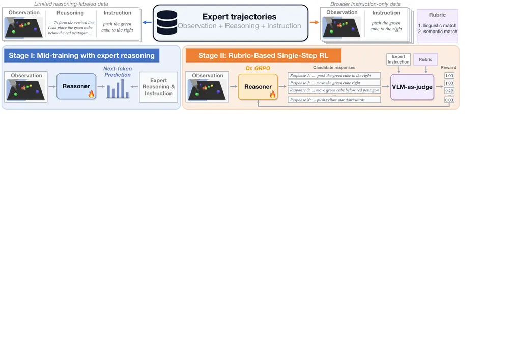
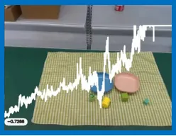
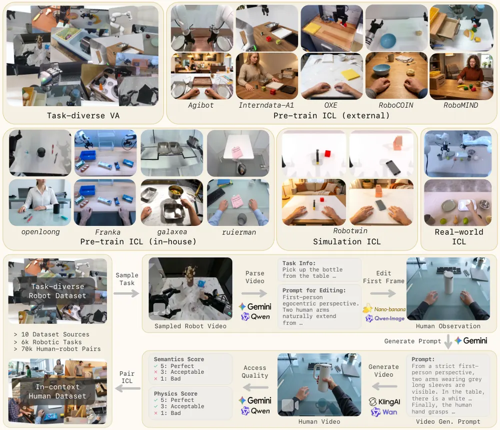
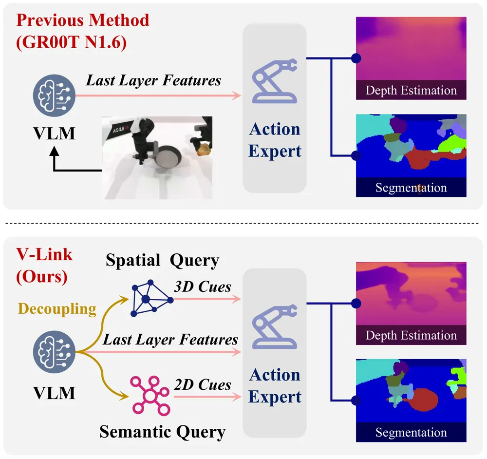
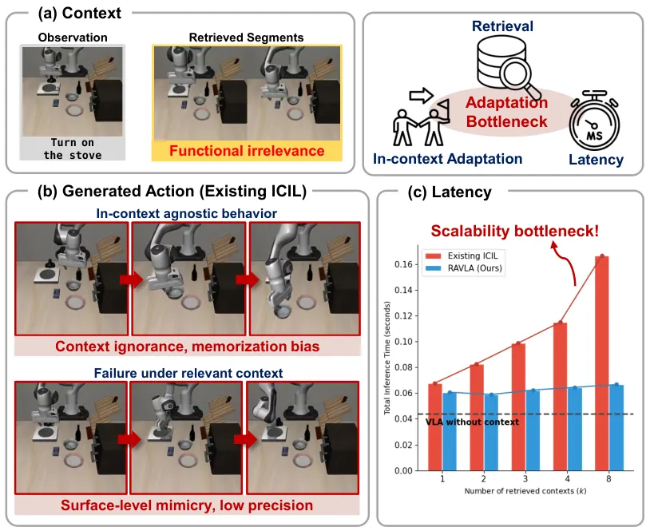
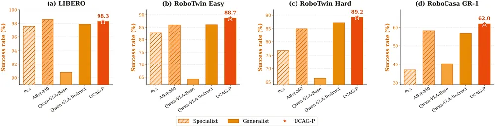
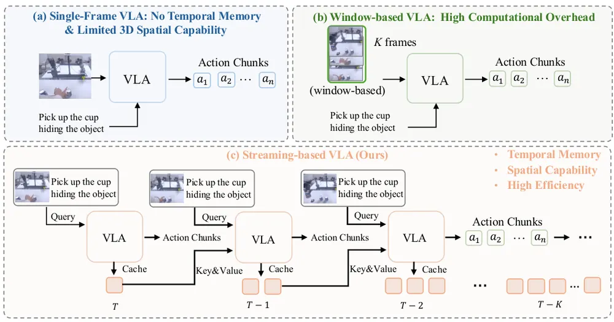
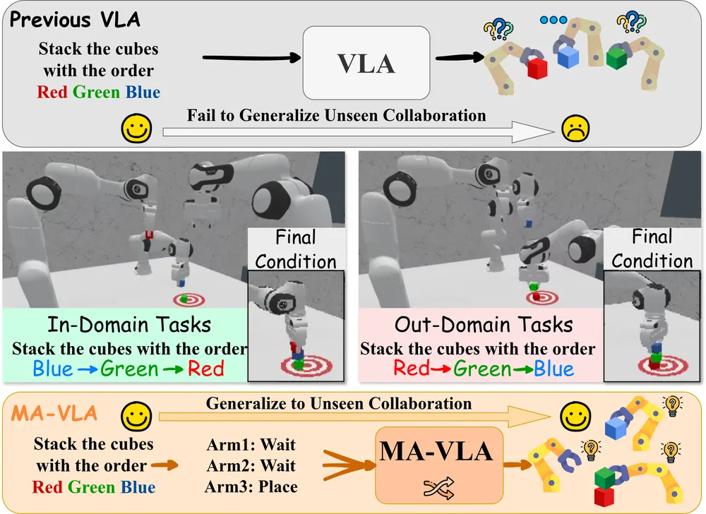
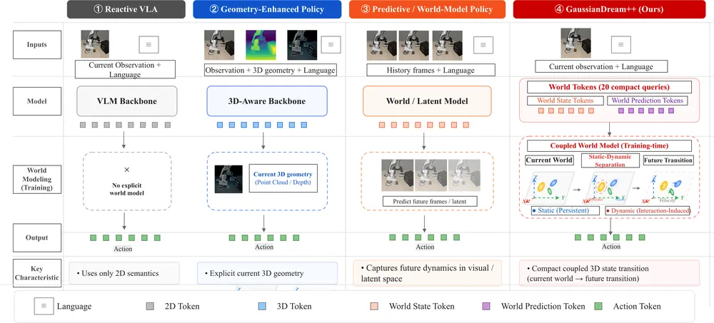
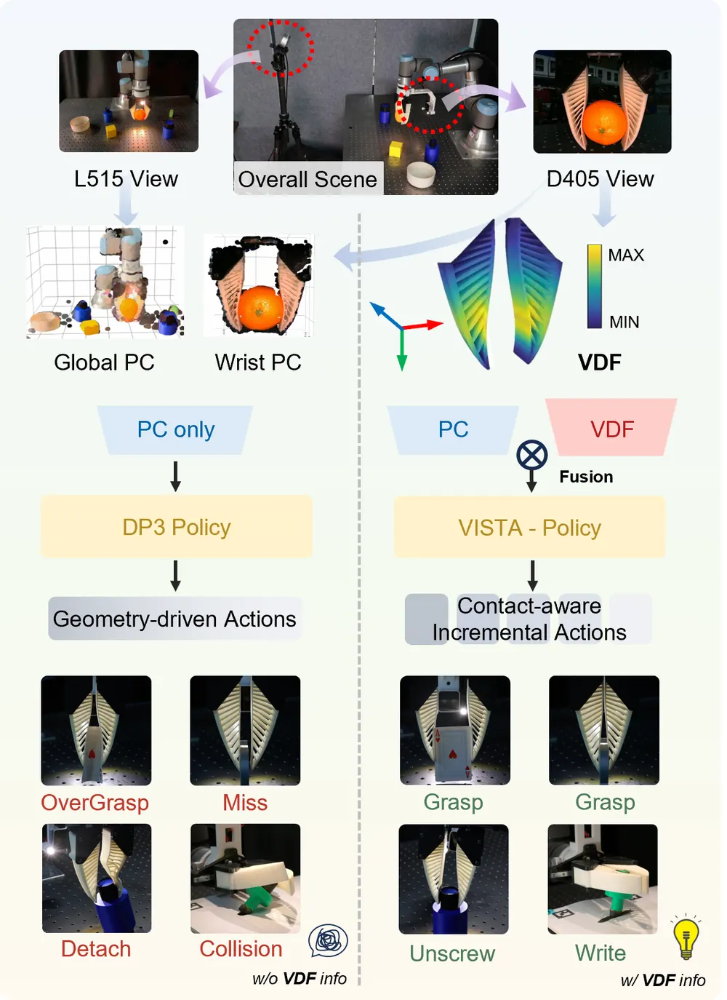
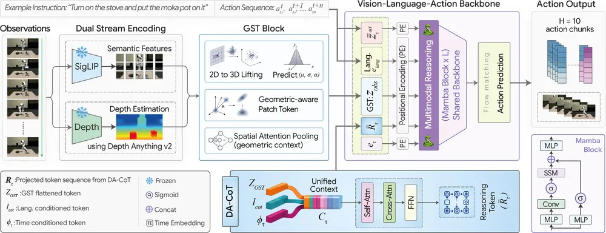
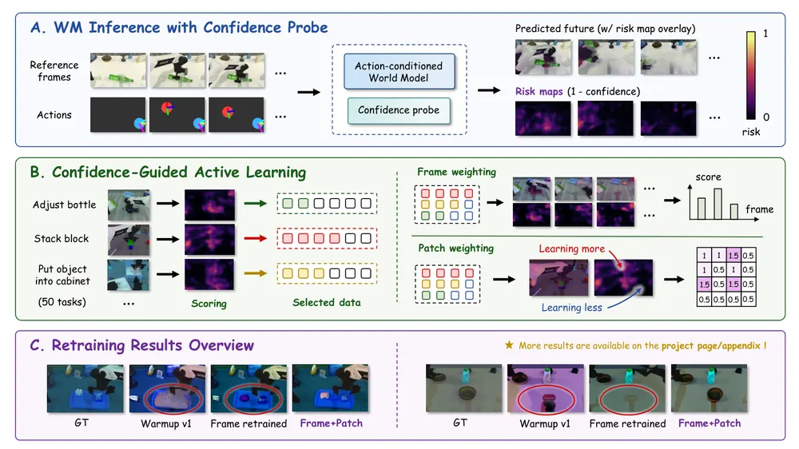
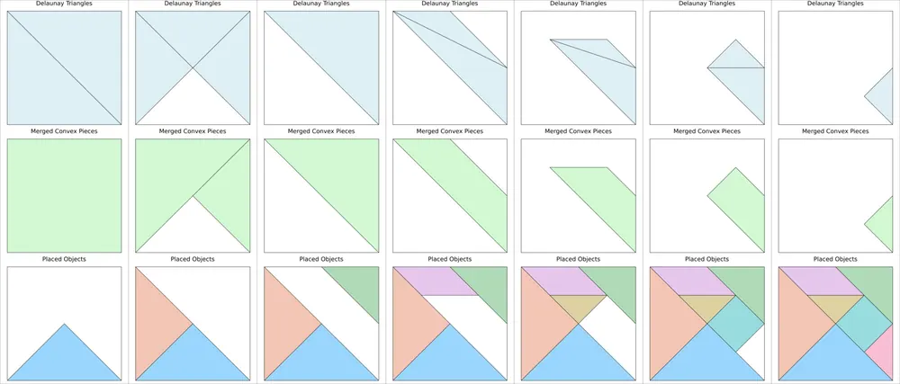
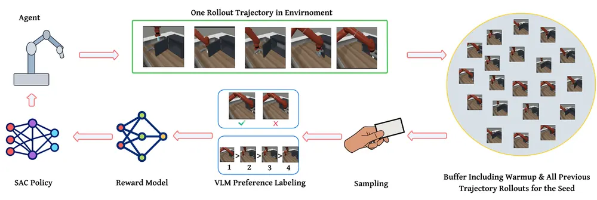
Confidence 신호를 학습이 아니라 온라인 실패 감지 트리거로 전환 - research question: VLA/world model이 내부적으로 갖는 confidence·accessibility 신호(V-Link의 probing, GaussVLA의 opacity, ConfAL-WM의 patch confidence)를 추론 중 실시간으로 뽑아 실패를 사전에 예측할 수 있는가 - 접근·novelty: 오늘 세 논문 모두 confidence를 학습 신호나 오프라인 진단 도구로만 씀. 이를 online monitor로 재배치해 threshold 초과 시 recovery를 트리거하는 구조는 미탐구임 - 왜 지금·경쟁 prior works: ConfAL-WM(patch confidence)과 GaussVLA(opacity)가 confidence 추정 메커니즘을 이미 학습해 뒀고, V-Link의 probing 방법론이 진단 도구로 바로 재사용 가능함. 세 재료가 오늘 동시에 나온 게 배경임 - risk·target venue: confidence가 실제 물리적 실패(충돌·미파지)와 얼마나 강하게 상관되는지 실증이 관건. CoRL/RSS 타깃
실패 감지 + retrieval 기반 recovery memory 결합 - research question: LM-X식 dense progress/variance 신호로 실패 시점을 감지한 뒤, RA-VLA식 retrieval로 유사한 과거 실패-복구 사례를 검색해 복구 행동을 생성할 수 있는가 - 접근·novelty: LM-X는 실패를 감지하는 신호(RTG, return-to-go 음의 margin)만 만들고 복구 행동은 별도로 학습하지 않음. RA-VLA는 정상 task 적응에만 retrieval을 씀. 두 기능(감지→검색)을 잇는 파이프라인은 새로운 조합임 - 왜 지금·경쟁 prior works: LM-X가 실패 rollout 1000시간을 이미 학습에 포함해 실패 표현이 잘 학습돼 있고, RA-VLA의 action-aware retriever가 검색 품질을 검증함 - risk·target venue: 실패-복구 쌍 데이터 자체가 희귀해 buffer 구축 비용이 큼. CoRL
Camera-centric anchor 표현을 object-centric 3DGS·scene graph의 관측 인터페이스로 확장 - research question: UCAG-P의 카메라 좌표계 anchor motion(p0/p1)을 3DGS 기반 scene 표현의 노드와 직접 연결해, active perception이 다음에 어디를 봐야 하는지 anchor 궤적으로 결정할 수 있는가 - 접근·novelty: UCAG-P는 anchor를 오직 실행 명령 변환에만 쓰고 장면 표현과는 분리돼 있음. GaussVLA의 Gaussian primitive 토큰을 scene graph node로 확장하는 아이디어와 결합하면 anchor-장면 연결 고리를 만들 수 있음 - 왜 지금·경쟁 prior works: UCAG-P가 ALOHA→ARX 전이 시 성공률 35%에 그친 사례가 카메라 관측만으로는 못 잡는 kinematic 정보가 있음을 시사해, scene 표현 보강의 필요성을 직접 보여줌 - risk·target venue: 3DGS 업데이트 비용이 실시간 제어 주기와 맞는지가 핵심 리스크. ICRA/IROS
Test-time reasoning의 인과적 기여를 실패 복구 reasoning으로 확장 - research question: R³가 보인 "test-time free-form reasoning이 causal하게 성공률에 기여한다"는 결과가, 정상 수행이 아니라 실패 이후 재계획(replanning) 상황에서도 성립하는가 - 접근·novelty: R³는 정상 task 수행에서만 truncation 개입 실험을 했음. 실패 직후의 reasoning trace를 같은 방식으로 개입해 causal 기여를 측정하면 recovery reasoning의 설계 근거가 됨 - 왜 지금·경쟁 prior works: R³의 mid-training(성공·실패 무관 next-token) + rubric RL 레시피가 실패 복구용 reasoning 학습에도 바로 이식 가능함 - risk·target venue: real-robot 검증이 없다는 R³ 자체의 한계를 상속함. RSS/CoRL
시각 기반 저비용 접촉 신호를 world model latent에 통합 - research question: VISTA의 Visual Deformation Field(VDF, 촉각 센서 없이 카메라만으로 추정한 접촉 변형)를 world model의 latent state에 넣어 접촉 실패(과파지·미파지)를 사전 예측하는 신호로 쓸 수 있는가 - 접근·novelty: VISTA는 VDF를 imitation policy의 입력으로만 씀. world model rollout에 VDF를 조건화하면 접촉 시점의 물리적 결과를 예측하는 데 확장 가능함 - 왜 지금·경쟁 prior works: VISTA가 하드웨어 의존성 낮은 범용 UMI 그리퍼에서 검증해, 특수 센서 없이 여러 world model 파이프라인에 이식하기 쉬움 - risk·target venue: VDF가 실제 접촉력과 정량적으로 어떻게 대응하는지 이 논문도 검증하지 않음(저자가 future work로 명시). ICRA
| # | 제목 | 점수 | 🤖 | 분야 | 한 줄 근거 |
|---|---|---|---|---|---|
| 1 | GaussVLA: Geometry-Aware Spatial Reasoning for Vision-Language-Action Model | 72 | 10 | VLA | semantic·depth feature를 3D Gaussian token으로 압축하는 Gaussian Spatial Tokenizer와 depth 기반 non-autoregressive 추론 모듈을 결합한 Mamba 기반 VLA임. LIBERO에서 200M 파라미터로 93.5% 평균 성공률, Spatial suite 100%를 냈고 SpatialVLA 대비 19.7% 상대 개선하며 실로봇 평가도 포함해 object-centric 3D representation과 VLA 우선주제에 정확히 부합함. |
| 2 | V-Link: Recovering Lost Visual Representations in Action DiT for Vision-Language-Action Models | 72 | 9 | VLA | VLA의 action expert가 VLM의 3D 기하·2D semantic 정보에 제대로 접근하지 못한다는 문제를 지적하고 Spatial/Semantic query를 Action DiT에 주입하는 V-Link를 제안함. LIBERO-Plus에서 +31.2%, RoboTwin2.0에서 +18.8%, 실제 휴머노이드 로봇에서도 +20~24% 향상을 보여 VLA 아키텍처 문제에 대한 실질적 해법으로 실로봇 검증까지 됨. |
| 3 | GaussianDream++: Efficient 3D Gaussian World Modeling for Robotic Manipulation | 71 | 10 | World Model | VLA 백본에 World State/Prediction Token을 삽입해 학습 시에만 3D Gaussian 예측을 감독하고 추론 시엔 20개 토큰만 남기는 구조임. LIBERO 98.6%, 실물 로봇에서 pi_0.5 대비 성공률을 29.2%에서 52.5%로 끌어올려 world model과 3DGS를 결합한 실용적 설계로 보임 |
| 4 | LM-X: Explainable Action Modeling with Progress, Event, and Uncertainty Prediction for Generalist Robot Manipulation | 68 | 9 | VLA | 진행도·이벤트·불확실성을 온라인으로 예측해 행동 생성에 직접 조건화하는 VLA 구조임. 2만 시간 실물 데이터로 학습해 RoboTwin2.0에서 GR00T N1.7 대비 74.1% vs 55.4%, 실물 7태스크에서도 큰 격차로 앞서 설득력이 큼 |
| 5 | One Policy, Many Embodiments: Unified Camera-Centric Action Geometry Pre-training for Heterogeneous Embodied Manipulation | 68 | 9 | VLA | 로봇팔·휴머노이드·사람 손을 카메라 기준 좌표의 공통 action schema로 통일해 이종 embodiment 데이터를 함께 학습하는 방법임. LIBERO 98.3%, RoboTwin Easy/Hard 88.7/89.2%, LIBERO-Plus 82.0% zero-shot 등 단일 체크포인트로 광범위한 벤치마크를 통과해 설득력이 큼 |
| 6 | StreamPI: Streaming Multimodal Temporal Modeling for Vision-Language-Action Models | 65 | 9 | VLA | pi0.5 같은 single-frame VLA가 과거 관측을 유지하지 못하는 한계를 instruction-anchored temporal modeling으로 파라미터 추가 없이 해결한 StreamPI임. 프레임 간격을 랜덤화해 비동기 실로봇 배포까지 다루고 실로봇 태스크와 LIBERO 모두에서 pi0.5 대비 개선을 보여 VLA 핵심 문제에 대한 실용적이고 검증된 기여임. |
| 7 | MA-VLA: Multi-Arm Vision-Language-Action Model for Collaboration and Compositional Generalization | 65 | 9 | VLA | 다중 팔 협동을 원자적 프롬프트로 분해해 팔별로 할당하고 Arm Shuffle로 역할 불변성을 학습시킨 VLA 구조임. 훈련에 없던 협업 패턴에서 기존 SOTA VLA가 대부분 실패하는 반면 MA-VLA는 sim과 실물 모두에서 성공해 compositional generalization 기여가 뚜렷함 |
| 8 | $R^3$: Training Robots to Reason in Natural Language via Reinforcement Learning | 63 | 9 | VLA | VLM을 자유형식 자연어 추론으로 mid-training 후 rubric 기반 RL로 다듬어 저수준 정책을 test-time에 유도하는 방법임. Language Table과 시뮬레이션 양팔 장보기 태스크에서 지시문만 쓰는 모방학습 baseline을 크게 앞서 test-time reasoning을 로봇 제어에 접목한 기여가 뚜렷함 |
| 9 | RA-VLA: Retrieval-Augmented VLA for Test-Time Adaptation | 62 | 9 | VLA | In-Context Imitation Learning의 검색-실행 병목을 behavior-aligned retrieval로 해결한 training-free VLA 적응 방법임. LIBERO와 실물 UR5e에서 우수한 성능을 보여 test-time adaptation 우선주제에 부합함 |
| 10 | Zero-WAM: In-Context World-Action Modeling from Human Videos for Open-Ended Task Generalization | 62 | 9 | World Model | 사람 시연 영상을 in-context 프롬프트로 써서 미학습 태스크를 수행하는 causal video-action model임. HumanGen 7.4만 쌍 데이터셋과 IFP 목적함수로 RoboTwin2.0 미지 7태스크에서 최강 baseline 대비 29.5%p 개선했고 실물 장면 일반화도 보임 |
| 11 | Beyond Pairwise Feedback: Listwise Vision-Language Supervision for Preference-Based Reward Learning | 62 | 8 | Manipulation | VLM이 생성한 listwise 순위를 Bradley-Terry 대신 Plackett-Luce로 학습해 reward model을 만드는 첫 프레임워크임. Meta-World manipulation에서 pairwise·K-wise 베이스라인과 동등 이상 성능을 냈고 최고 설정은 86% 성공률로 oracle에 근접하나 검증이 시뮬레이션에 한정됨. |
| 12 | Rollout-Decoded Reconstruction for Long-Horizon Prediction in Latent World Models | 62 | 5 | World Model | latent world model 학습 시 free-running rollout을 직접 디코딩해 학습-평가 불일치를 줄이는 단일 loss term을 제안함. world model rollout 안정성 문제를 다뤄 robot world model에도 참고할 만하나 검증이 chaotic PDE 한 시스템에 그침. |
| 13 | Sequential Object Placement Optimization with Convex Decomposition | 55 | 8 | Manipulation | convex object를 convex hull 안에 두는 문제를 vertex 제약만으로 표현해 닫힌 형태의 미분 가능한 배치 최적화로 푼 순차 최적화 기법임. grid search 대비 100배 빠르고 Allegro Hand와 Xarm으로 실제 Tangram 퍼즐을 푸는 실로봇 데모까지 보였으나 알고리즘 자체는 기존 최적화 문제의 새로운 정식화 수준임. |
| 14 | ConfAL-WM: Confidence-Guided Active Learning for Action-Conditioned World Models | 55 | 8 | World Model | world model 후속학습에 confidence map 기반 능동학습을 결합한 방법임. RoboTwin2.0에서 scalar reward나 judge 기반 baseline보다 개선을 보여 test-time·post-training 우선주제와 잘 맞음 |
| 15 | VISTA: Visually Inferred Spatial ConTact Attention for Contact-Rich Manipulation | 55 | 8 | Manipulation | 순응 그리퍼의 3D 변형장을 촉각 센서 없이 시각으로 추정해 접촉 피드백으로 쓰는 모방학습임. 3D Diffusion Policy와 촉각 baseline을 모두 능가하고 미지 물체 크기에도 일반화를 보였으나 특정 그리퍼 하드웨어에 의존함 |
| 16 | PointRL: Learning Point-Level Vision-Language Grounding from Verifiable Annotation Evidence | 55 | 6 | VLA | bounding box·mask 같은 기존 annotation을 verifier evidence로 바꿔 point-level grounding을 검증 가능한 보상으로 학습하는 RL 프레임워크임. GUI·로봇 조작의 point 인터페이스에 바로 쓰일 수 있는 새로운 문제 설정이고 RoboSpatial 등에서 일반화 gain을 보임. |
| 17 | Code World Model: Coding Agent as World Brain | 55 | 5 | World Model | world model을 시각 재현과 상태 진화로 분리해, coding agent가 실행가능한 코드로 지속적인 world state를 관리하고 이를 proxy video로 컴파일해 video model이 렌더링하게 하는 새 패러다임(Code World Model)임. 기존 video 기반 world model이 결과만 보고 규칙을 놓치는 한계를 정면으로 다뤄 문제 설정 자체의 새로움이 크나 아직 간단한 인터랙티브 world 수준 검증임. |
| 18 | Bayesian Flow Networks for Offline Trajectory Planning | 55 | 5 | RL | Bayesian Flow Network로 이산·연속 trajectory를 하나의 확률적 형식으로 다루는 offline RL trajectory planning 기법임. diffusion 기반 planner의 대안으로 새로운 생성 패러다임을 제시하나 실험이 대표 태스크 수준에 그쳐 실로봇 검증은 없음. |
| 19 | TacForcing: Streaming Action Generation with Execution-Time Tactile Feedback | 54 | 8 | Manipulation | chunk 예측의 촉각 정보 지연 문제를 streaming action expert와 실행 시점 근접 주의로 해결한 방법임. 실물 3개 태스크 포함 접촉 중심 조작에서 baseline 대비 성공률 개선을 보임 |
| 20 | Fast Generative Grasping via Lie Group-Constrained MeanFlow | 52 | 8 | Manipulation | SO(3)×R^3 위에서 MeanFlow를 정의해 5회 이하 평가만으로 파지를 생성하는 방법임. ACRONYM에서 diffusion·flow 기반 SOTA와 동등한 성능을 최대 39배 빠르게 내고 추가 학습 없이 실물 전이까지 검증함 |
| 21 | LAC: Linear and Angular Compliance for Humanoid Whole-body Control | 52 | 7 | Robotics | 휴머노이드 상반신 전체에 선형·각 순응성을 동시에 부여하는 teacher-student RL 제어기임. 대규모 augmented dataset과 실물 원격조작 검증까지 갖춰 기술적 설득력이 있음 |
| 22 | 4DStreamCtrl: Interactive Video Generation with Online 4D Control | 52 | 5 | World Model | 카메라·물체 움직임·depth를 하나의 3D point-track 표현으로 통합해 실시간 streaming으로 4D 제어 가능한 비디오 생성을 하는 4DStreamCtrl임. embodied agent를 위한 closed-loop 시각적 상상(world model)으로 확장 가능성을 직접 언급하며 20FPS 실시간성을 갖춰 world model 연구와 연결됨. |
| 23 | 4DGS-WAM: Bridging Past and Future with an Object-Centric World Action Model based on 4D Gaussian Splatting | 50 | 6 | World Model | 동적 물체와 정적 배경을 4D Gaussian Splatting으로 분리해 배경은 재생성하지 않고 물체 미래 상태만 policy·world model로 예측하는 object-centric world action model(4DGS-WAM)임. object-centric 3D/4D representation과 world model을 결합한 새 formulation이나 work-in-progress 상태로 KITTI-MOT 단기예측만 검증됨. |
| 24 | Advantage-Driven Explicit Memory for Social Navigation | 49 | 7 | Navigation | RL advantage 신호로 희귀 고비용 실패 사건만 골라 비모수 메모리에 저장하는 사회적 내비게이션 정책임. robot memory 우선주제와 맞고 sim-to-real gap 완화 아이디어도 참신하나 사회 내비게이션이라는 좁은 도메인에 그침 |
| 25 | Agentic Game Development as a Verifiable Trajectory Data Engine for Scaling World Models | 48 | 4 | World Model | 게임 엔진의 충돌·물리·플레이 가능성 체크를 world model 강화학습의 보상 신호로 쓰는 RLHEV를 제안함. world model 스케일링에 실행 가능한 보상 신호가 부족하다는 문제를 코드 에이전트의 성공 요인에서 끌어와 정확히 짚은 formulation이 새로움. 게임 장면 생성 도메인이라 실제 로봇 world model 검증은 없음. |
| 26 | PRISM: Projection-Integrated Sampling-Based MPC with Bayesian Cost Tuning for Bimanual Manipulation | 47 | 7 | Manipulation | GPU 물리 시뮬레이터를 온라인 world model로 쓰는 sampling 기반 MPC로 QP 투영을 결합한 양팔 조작 방법임. PerAct2 변형 태스크와 실물 UR5e 이식까지 보였으나 알고리즘 조합 성격이 강함 |
| 27 | Generative Action-Chunk Sampling for Adaptive Stiffness Control in Physical Human-Robot Collaboration | 47 | 6 | Manipulation | 생성 정책이 샘플링한 action chunk의 분산을 강성 제어 신호로 쓰는 아이디어가 참신함. 실물 협동작업 실험으로 성공률 개선을 보였으나 태스크가 4방향 이동 하나뿐임 |
| 28 | SkyDrive: Learning to Drive in a New City from Aerial Traffic Monitoring | 45 | 6 | Navigation | 드론 기반 교통 모니터링으로 여러 차량을 동시에 관측해 새 도시의 자율주행 planner를 30분 분량 항공 데이터만으로 적응시키는 프레임워크임. 137시간 항공 영상에서 65만 개 샘플을 뽑아 cross-city domain gap을 실증했고 데이터 수집 방식 자체를 새로 제안했다는 novelty가 있으나 실제 차량 배치 검증은 없음. |
| 29 | Anytime Global Tensor Motion Planning | 45 | 6 | Manipulation | GTMP를 일반화해 어떤 local planner든 끼워 넣을 수 있게 하고 homotopy class 커버리지를 이론적으로 증명한 motion planning 연구임. 조작 벤치마크에서 SOTA와 동등한 성능을 보이는 이론 중심 기여임 |
| 30 | Drift Variation Autoencoder: Unifying Generation and Representation Learning through Conditional Posterior Flow Matching | 45 | 2 | LG | conditional flow matching 하나로 생성과 representation learning을 통합하는 이론·프레임워크임. posterior 충분성 조건을 증명하고 multimodal benchmark에서 검증했으나 robotics 적용 사례는 없음. |
| 31 | CaSKG: Counterfactual-Causal Skill Graphs for Scalable Agent Skill Retrieval | 44 | 4 | Embodied AI | 스킬 그래프의 관계를 counterfactual probe로 보정해 검색 품질을 높인 CaSKG임. ALFWorld·ScienceWorld 같은 embodied text 환경에서 스킬 체이닝 성능을 개선해 로봇 스킬 라이브러리 검색에 아이디어로 참고할 만함. 다만 실제 로봇이 아닌 텍스트 기반 시뮬레이션 환경임. |
| 32 | Leveraging Inter-object Affordances for Efficient Planning in Contact-rich Tasks | 42 | 6 | Manipulation | VLM으로 물체 간 접촉 어포던스를 추출해 TAMP 도메인을 보강한 U-TAMP 확장 연구임. 계획 성공률과 속도 모두 개선했으나 시뮬레이션 키친 시나리오에 국한됨 |
| 33 | VBVR-Pro: A Scalable and Verifiable Suite for Native Visual Reasoning | 42 | 4 | Multimodal | 이미지·비디오 생성을 추론의 매개체로 쓰는 native visual reasoning을 검증가능한 보상과 함께 훈련 가능하게 만든 testbed(VBVR-Pro)임. spatiotemporal state tracking에 video generation이 강하다는 mechanism study가 embodied spatial reasoning과 연결되나 로봇 실험은 없음. |
| 34 | SUPER ODOMETRY 2.0: Resilient Odometry via Hierarchical Adaptation | 42 | 4 | Navigation | IMU를 카메라·LiDAR와 동등하게 취급하는 계층적 센서 융합 odometry로 200km 800시간 실물 검증했음. 견고성 엔지니어링이 중심이고 새로운 학습 패러다임은 아님 |
| 35 | SimVerity: When Does Simulated Agent Success Survive Physical Deployment? | 42 | 3 | Embodied AI | 시뮬레이션에서의 성공이 실제 스마트홈 배포에서도 유지되는지 검증한 프레임워크임. 시뮬레이터가 240개 라이트 시험을 모두 통과했지만 카메라가 42개의 실패를 추가로 잡아내 sim-to-real 격차를 정량적으로 보임. 로봇 조작이 아닌 스마트홈 도메인이지만 embodied agent 검증 방법론으로 참고할 만함. |
| 36 | RAEM: Robust Autonomous Exploration for Multi-Floor Environments with a Quadruped Robot | 40 | 5 | Navigation | 다층 건물에서 계층적 tomography 기반 탐사 프레임워크로 5층 계단까지 실물 검증했음. 시스템 엔지니어링 기여이고 학습 기반 방법은 아님 |
| 37 | Pose-Anchored Optical Flow for Low-Latency Human Action Anticipation in Human-Robot Teaming | 38 | 6 | Embodied AI | 관절 주변 pose-anchored optical flow로 human-robot teaming에서 사람 행동을 조기에 예측하는 PoseOFF임. HRI 실시간 인지에 실용적이나 pose와 optical flow를 결합한 수준의 표현 기여임. |
| 38 | EgoNav: Bridging Learned Waypoints and Geometry-Aware Local Control for Robust Indoor Navigation | 38 | 6 | Navigation | 학습된 waypoint를 기하학적으로 검증·보정하는 계층적 내비게이션 시스템임. Habitat-sim과 실물 휴머노이드에서 baseline 대비 개선을 보였으나 구성요소 결합 수준의 기여임 |
| 39 | PIVOT: A Multi-Trajectory Dataset and Testbed for Pose, Intrinsics, and Novel Viewpoint Evaluation in Real-World 3D Reconstruction | 38 | 5 | 3D Vision | NeRF·3DGS 벤치마크가 로봇·드론이 실제로 마주치는 궤적·pose·intrinsics 조건보다 지나치게 깔끔하다는 문제를 지적하고 PIVOT 테스트베드로 이를 분리 측정함. unseen trajectory에서 품질이 크게 떨어짐을 실증해 로봇 3D 인지 평가에 실용적이나 방법론 자체보다 벤치마크 기여임. |
| 40 | Bootstrapping a 4D LiDAR Annotation Tool from Video Foundation Models | 38 | 5 | 3D Vision | SAM2 비디오 마스크를 multi-view projection으로 4D LiDAR 라벨로 변환해 사람 라벨 없이 semantic·panoptic segmentation 학습 데이터를 만드는 LiDAR-SAM2임. 자율주행·로봇 scene understanding의 annotation 병목을 해소하는 실용적 도구지만 핵심은 기존 foundation model 재활용임. |
| 41 | CRESSim-Neo: A Batched GPU Simulation Engine for Surgical Robotics and Robot Learning | 38 | 5 | Simulation | 수술 로봇용 배치 GPU 시뮬레이터로 초당 2백만 스텝까지 성능을 보였음. 인프라 논문이라 새로운 학습 방법론 기여는 약함 |
| 42 | Quantum-Inspired Modeling of Driving Behavior | 38 | 4 | RL | 운전자 행동을 density matrix로 표현해 연속적·확률적·맥락의존적 특성을 하나로 담는 비지도 프레임워크임. 실도로 데이터로 자유흐름·전이·정체 세 구간을 복원하고 자율주행차의 주변 운전자 단기 예측에도 쓸 수 있음을 보였으나 매니퓰레이션·VLA 등 핵심 우선주제는 아님. |
| 43 | Beyond Scaling: Self-Evolving LLM Agents for Hardware Kernel Optimization via an Experience-Driven Workflow and Experience Graph Memory | 38 | 3 | LG | 과거 최적화 결정과 결과를 experience graph로 저장해 고정된 토큰 예산 안에서 관련 경험만 불러오는 LLM agent 프레임워크임. 하드웨어 커널 최적화 응용이지만 robot의 장기 experience memory 설계에 참고할 만한 구조임. |
| 44 | Solving Robust POMDPs with Omega-regular Objectives via Partially Observable Stochastic Games | 38 | 3 | RL | 다항 불확실성 집합을 가진 robust POMDP와 부분관측 stochastic game이 양방향으로 환원됨을 증명한 이론 연구임. POMDP는 로봇 planning의 기본 틀이지만 이 논문은 형식검증 이론 중심이라 실제 로봇 적용은 없음. |
| 45 | Paint What You See: Benchmarking Dexterous Visual Tool Use in Multimodal Agents | 38 | 3 | Embodied AI | 시각 증거로부터 도구 파라미터를 추론해 캔버스를 채워나가는 폐루프 시각-행동 정합 능력을 평가하는 EASEL 벤치마크임. 시각 정보와 실행 정밀도의 결합을 다룬다는 점에서 능동 지각·시각-행동 연구와 맥락이 통하나 실제 로봇이 아닌 디지털 캔버스 환경임. |
| 46 | V-Rubrics: Visual Faithfulness via Rubric-Based Reinforcement Learning | 38 | 2 | Multimodal | 정답을 atomic proposition으로 분해해 시각적 grounding·추론일관성·지시준수를 각각 채점하는 rubric 기반 RL(V-Rubrics)임. scalar reward의 credit assignment 문제를 다뤄 VLA reward 설계에 참고될 수 있으나 직접 로봇 적용은 아님. |
| 47 | LongVU-TTT: Causal Test-Time Training for Visual Resampling in Long Video Understanding | 38 | 2 | Video | long-video MLLM에 causal fast-weight test-time training resampler를 넣어 압축 전에 프레임을 문맥화하는 LongVU-TTT임. test-time training을 시각 압축에 적용한 점이 흥미로우나 로봇 도메인은 아님. |
| 48 | Demystifying Reinforcement Learning Post-Training of Language Models | 38 | 1 | LG | RL post-training이 base model의 사전분포·보상 세분화·프롬프트 다양성·모델 규모에 어떻게 좌우되는지 통제된 환경에서 분해한 분석 논문임. 새 방법 제안은 아니지만 RLVR 메커니즘 이해에 유용한 primer이고 로봇 RL에도 원리 차원에서 참고 가능함. |
| 49 | Beyond Local Surprise: Grounded Dialogue as Selective Belief Revision under Referential Uncertainty | 38 | 1 | NLP | 대화에서 지시체 불확실성에 따라 믿음을 보존할지 갱신할지 결정하는 정책을 비교한 연구임. 국소적 불일치보다 누적된 불확실성이 갱신을 유도한다는 반직관적 결과가 흥미로우나 텍스트 대화 중심이라 로보틱스 연관성은 약함. |
| 50 | Tunable Tool-Call Rates in LLM Agents via Representation Steering | 38 | 1 | LG | residual stream의 선형 방향 하나로 tool-call 비율을 0%에서 90%까지 학습 없이 조절하는 방법임. 학습이나 프롬프트 수정 없이 미지의 도구에도 방향이 일반화되는 점이 실용적이나 로보틱스 적용은 없음. |
| 51 | Spectral Allocation: Why Muon Outperforms Adam, and How to Improve Muon | 38 | 0 | LG | Muon이 Adam보다 나은 이유를 momentum buffer의 spectral 방향별 최적 step size 차이로 설명하고 이를 근거로 bulk를 더 활용하는 SAMuon optimizer를 제안한 연구임. 메커니즘 규명과 실측 성능 향상이 탄탄하나 LLM 사전학습 최적화 주제라 robotics와 무관함. |
| 52 | Quantitative Analysis of $ω$-Regular Robust MDPs | 36 | 3 | RL | 선형 불확실성 집합을 가진 robust MDP의 parity 목적 함수 값을 다항 시간에 계산하는 정책반복 알고리즘을 제시함. MDP 계획 이론의 확장으로 로봇 planning의 기반 이론과 맞닿아 있으나 형식검증 이론 중심이고 로봇 적용 실험은 없음. |
| 53 | A Tendon-Driven Five-Fingered Hand with Distributed Tactile Perception for Dexterous Manipulation | 35 | 6 | Manipulation | 오손·강성 겸비 구조에 이중 촉각 센서를 분산 배치한 손 설계 논문임. tactile perception 우선주제와 맞지만 조작 실험은 정성적 시연 수준임 |
| 54 | RSFusionDet: Underwater RGB-Sonar Multimodal Object Detection | 35 | 5 | Multimodal | 수중 RGB-Sonar 멀티모달 물체탐지 데이터셋과 cross-attention fusion 검출기(RSFusionDet)를 제안함. AUV 등 수중 로봇 인지에 직접 관련 있으나 fusion 모듈 자체는 점진적 개선 수준임. |
| 55 | Gaussian Splatting Underwater: A Controlled Cross-Regime Study | 35 | 5 | 3D Vision | 탁도·조명이 다른 수중 데이터셋에서 5개 3DGS 시스템을 동일 프로토콜로 비교한 통제 연구임. 수중 로봇 인지에 유용한 실패모드(구조 복원 실패, 조명 geometry 의존성)를 밝혔으나 새 방법 제안은 아님. |
| 56 | OpenCVL: An Open, Diverse, and Large-Scale Dataset for Fine-Grained Cross-View Localization | 35 | 4 | Navigation | in-the-wild 이미지를 포함한 대규모 cross-view localization 데이터셋(OpenCVL)임. GNSS 대안으로 로봇 navigation에 쓰일 수 있으나 데이터셋 기여 위주고 방법론적 새로움은 제한적임. |
| 57 | CoRE: Weakly Supervised Coarse-to-Fine Risk Evidence Learning in Driving Videos | 35 | 3 | Video | video-level 위험 판단만으로 시간·entity 수준 근거를 intervention 기반 distillation으로 복원하는 weakly-supervised 프레임워크(CoRE)임. 주행 위험 예측 도메인이라 embodied risk assessment와 맞닿아 있으나 매니퓰레이션과는 거리가 있음. |
| 58 | Visual General Intelligence: A White Paper | 35 | 3 | CV | 언어 중심 AGI 경로에 대비해 시각 경험만으로 어떤 지능이 발현될 수 있는지를 논의하는 position paper(Visual General Intelligence)임. 벤치마크·학습 패러다임·타 모달과의 관계를 폭넓게 다루나 새 방법론이나 실험 증거는 없는 개념 논문임. |
| 59 | ShuttleArena: Interpretable Self-Play in Physics-Based Badminton | 35 | 3 | RL | 물리 기반 배드민턴 self-play에서 타구 선택과 recovery 위치가 분리 불가능함을 보이고 PPO로 해석 가능한 전술을 학습시킨 환경임. 물리 시뮬레이션에서의 장기 의사결정 문제라는 점은 robotics와 통하나 실제 조작·이동 문제는 아님. |
| 60 | A Visual Dependence-Aware Framework for Multimodal Unsupervised Continual Post-Training | 35 | 2 | Multimodal | 토큰별 visual dependence의 구조적 왜곡을 cross-modal catastrophic forgetting의 지표로 삼아 MLLM의 unsupervised continual post-training(MU-CPT)을 다루는 새 문제 설정임. 로봇 memory·지속학습에 참고될 수 있으나 직접적인 로봇 실험은 없음. |
| 61 | Targeting the Attention Heads Behind Object Hallucination in LLaVA | 35 | 1 | Multimodal | LLaVA의 object hallucination을 특정 attention head로 진단하고 head-aware LoRA로 교정한 해석가능성 연구임. control 실험이 탄탄하나 로봇 적용과는 거리가 있음. |
| 62 | AdaptiveEmbed: Sample-Adaptive Multi-Vector Representation for Multimodal Retrieval | 35 | 0 | Multimodal | 샘플마다 multi-vector representation 용량을 적응적으로 할당하는 새 문제 설정(SAMVR)과 AdaptiveEmbed를 제안함. 멀티모달 검색 태스크 한정이라 로봇 연관성 없음. |
| 63 | EgoArgus: Benchmarking VLMs as Situational Assistants for Modality-Grounded User Supports | 34 | 3 | Multimodal | 1인칭 영상과 대화 중 어느 모달리티를 신뢰할지 판단하는 VLM 상황보조 벤치마크임. embodied spatial reasoning과 맞닿아 있으나 실제 로봇 개입은 없음 |
| 64 | PhaseShift: Topology-Aware Data Harmonization and Model Consolidation Across Signalized Intersections | 34 | 3 | Navigation | 5개 교차로의 이질적 궤적 데이터를 하나의 actor-centric 표현으로 통일해 재사용 가능한 궤적 예측 백본을 학습함. zero-shot 배포에서 로컬 모델보다 minADE·minFDE를 개선했으나 자율주행 교차로 도메인이라 매니퓰레이션 연구와는 거리가 있음. |
| 65 | Choose Your Game Wisely: Measuring Game-Theoretic Structures in Real-World Vehicle Interactions | 34 | 3 | Navigation | 실제 차량 궤적에서 동시적·순차적·비대칭적 상호작용 구조를 측정하는 프레임워크임. 여러 게임이론 정식화가 상호 보완적임을 실증해 자율주행 상호작용 모델링에 참고할 만함. |
| 66 | Learning What to Share and What to Personalize: Hierarchical Strategy Co-Evolution for Agent Memory | 34 | 2 | NLP | 에이전트 메모리 관리를 전역 공유 전략과 사용자별 적응 전략으로 분리한 계층적 프레임워크임. 로봇 메모리 연구에 참고할 만한 구조지만 대화형 에이전트 개인화가 목적이라 로보틱스 직접 연관은 약함. |
| 67 | Learning Mixtures of Plackett-Luce Models for Multi-Objective Alignment | 34 | 1 | NLP | 다수 annotator의 이질적 선호를 Plackett-Luce 혼합모델로 복원하는 alignment 기법임. reward·preference 학습 이론으로 robot reward learning에 참고될 수 있으나 실험은 LLM alignment 데이터셋에 한정됨. |
| 68 | JIT-Agent: Scaling Harness Intelligence via Just-in-Time Harness Evolution | 34 | 1 | LG | 태스크에 맞춰 에이전트 harness를 즉석에서 합성·자가진화시키는 모델임. DeepSearchQA 등에서 큰 개선을 보였으나 코딩·검색 에이전트 중심이라 로봇 스킬 오케스트레이션과는 거리가 있음 |
| 69 | Anchoring Bias in LLM-as-a-Judge Systems: Prior Scores Compromise Evaluation Independence | 34 | 0 | NLP | 이전 점수 메타데이터가 LLM 판정을 체계적으로 편향시킨다는 것을 19만여 건 평가로 보인 연구임. 실서비스 파이프라인에 영향이 크지만 로봇과는 무관함 |
| 70 | Gating Before Commitment: Anticipating Intent Divergence to Prevent Post-Interaction Decision Failures in Autonomous Driving | 33 | 5 | Robotics | 언어 기반 의도 모듈로 계획을 커밋 전에 게이팅해 자율주행 계획 실패를 막는 결정층 연구임. failure detection 우선주제와 맞지만 재생된 사고 클립 몇 건에 대한 소규모 검증임 |
| 71 | It's a matter of timescale: non-linear utility in successor features and multi-objective planning and learning | 33 | 4 | RL | 서로 다른 시간 척도에서 발생하는 비선형 효용이 같은 의사결정 문제 안에 공존할 수 있다는 점을 지적하며 기존 multi-objective RL·successor feature 접근이 이를 놓친다고 주장하는 position paper임. robot RL의 multi-objective 설계에 시사점 있으나 실험적 검증은 예시 수준에 그침. |
| 72 | A Statistical Audit of Physical AI Benchmark Redundancy | 33 | 4 | Embodied AI | 51개 모델과 12개 physical AI 벤치마크의 중복성을 통계적으로 분석해 순위가 흔들리는 문제를 드러낸 감사 논문임. 새로운 방법 제안보다는 평가 관행에 대한 비판적 진단에 가까움 |
| 73 | Simultaneous inference of environmental and interaction forces in collective dynamics | 33 | 3 | LG | 상호작용 kernel과 환경·개체 힘을 동시에 비모수적으로 추정하는 변분 학습 프레임워크임. swarm robotics를 응용 예로 들지만 실험은 동기화·정렬 등 일반 collective dynamics 벤치마크에 그침. |
| 74 | Control-Oriented Learning for Dynamic Tracking and Stability Analysis of Soft Pneumatic Actuators | 33 | 3 | Control | EDMDc로 soft actuator를 모델링해 안정성 분석까지 실험 검증한 제어 논문임. robot learning이나 VLA 우선주제와는 거리가 멀고 고전적 제어 기여로 봄 |
| 75 | A Storage-Retrieval Gap in Parametric Knowledge Graph Memory | 33 | 2 | NLP | 지식그래프를 entity별 LoRA adapter로 오프라인 압축해 context 없이 질의하는 parametric memory 구조를 검증한 연구임. 지식은 저장되지만 유사도 기반 검색으로는 못 찾는다는 한계를 실증해 robot memory 설계에 참고할 만한 negative result임. |
| 76 | The Von-Neumann State-Space Transformer for neural decoding | 33 | 1 | LG | state-space memory로 저차원 명령을 읽어 token별 연산자를 합성하는 sample-efficient transformer를 motor cortex decoding에 적용함. 아이디어는 흥미롭지만 신경 디코딩 도메인이라 robotics 직접 연관성은 낮음. |
| 77 | GRAPE: Gradient Refinement and Progress-Aware Exploitation for Query-Efficient High-Dimensional Bayesian Optimization | 33 | 1 | LG | local gradient posterior를 먼저 정교화한 뒤 하강 조건부 기대 감소량으로 방향을 고르는 2단계 고차원 Bayesian optimization 기법임. 이론과 실험은 탄탄하나 응용이 adversarial attack·prompt optimization이라 robotics와는 거리 있음. |
| 78 | Beyond Optimal Rates in Stochastic Optimization: Trajectory-Adaptive Stopping Rules | 33 | 1 | LG | SGD 궤적을 순차 실험으로 보고 최적 정지 시점을 실시간으로 인증하는 confidence sequence 이론을 제안함. 결정론적 horizon보다 훨씬 적은 반복으로 멈출 수 있음을 보였으나 일반 최적화 이론이라 robotics 적용은 간접적임. |
| 79 | Mitigating LLM sycophancy with RL-based fine-tuning: Bayesian Truth Serum approach | 33 | 0 | NLP | Bayesian Truth Serum을 GRPO reward로 써서 라벨 없이 LLM sycophancy를 줄이는 방법임. 이론적 보장과 실험 모두 탄탄하나 robotics와는 무관함. |
| 80 | Belief Cascades Drive Persuasion in LLM Agent Networks | 33 | 0 | NLP | LLM 에이전트 네트워크에서 설득이 토폴로지·경쟁·주제에 따라 어떻게 전파되는지 측정한 멀티에이전트 연구임. 실험 설계가 체계적이나 로봇 우선주제와는 무관함 |
| 81 | Low-Resolution Perception for Robotic Packing | 32 | 5 | Robotics | 저해상도 depth로도 재구성 단서와 파지 안정성 추정을 결합한 NBV 전략임. active perception 우선주제와 맞지만 IFAC 워크숍 수준의 좁은 검증임 |
| 82 | Resolving Multi-Modal Regression by Difference-Quotient-Based Clustering:Fast Coarse Conditional-Label Assignment | 32 | 2 | LG | 입력이 비슷한데 출력이 먼 표본들의 모순을 기준으로 클러스터를 나눠 mean-collapse를 피하는 multimodal regression 기법임. 로봇 행동의 multimodality 문제와 원리적으로 관련 있으나 검증은 합성 벤치마크에 그침. |
| 83 | A Constitutive Markov Physics-Informed Neural Operator (MPNO) for Autoregressive Stability in Transient Dynamics | 32 | 2 | LG | spectral radius를 1 이하로 구조적으로 제한한 Markov propagation operator로 autoregressive rollout 불안정을 설계 단계에서 없애는 neural operator임. world model의 rollout 안정성과 원리적으로 통하나 검증은 콘크리트 관입 등 비robotics 물리 문제에 한정됨. |
| 84 | Reconstructing the Right Episode: Evaluating Interleaved Conversational Memory Beyond Long Context | 32 | 2 | NLP | 구간 경계가 없는 긴 대화에서 어느 과거 에피소드가 현재 결정에 유효한지 추론하는 능력을 평가하는 벤치마크와 계층적 메모리 구조임. robot memory와 개념적 접점은 있으나 대화 어시스턴트 응용임 |
| 85 | Repair or Resample? Rethinking Failure Debugging in LLM Multi-Agent Systems | 32 | 2 | LG | 멀티에이전트 시스템 실패가 인과적으로 수리되는지 단순 재샘플링에 의한 우연인지 검증하는 SymTrace 프레임워크임. 실패 진단·복구 연구와 문제의식이 통하지만 도메인이 소프트웨어 멀티에이전트 시스템이라 로봇 실패 복구는 다루지 않음. |
| 86 | SwarmWorld: Stigmergic technological evolution in societies of language-model agents | 32 | 2 | World Model | 역할 없이 시작한 LLM 에이전트 집단이 공유 환경에서 상호작용해 지속적인 기술 생태계를 스스로 조직화하는 SwarmWorld를 제시함. 물리적 관찰을 통한 재사용이 소통보다 기술 축적에 더 크게 기여한다는 결과가 흥미로우나 시뮬레이션 내 에이전트 사회 연구라 실제 로봇과는 거리가 있음. |
| 87 | Where to Look Matters: On-Policy Self-Distillation for Long-Video Understanding | 32 | 1 | Video | 질문 관련 clue 구간만 보는 teacher를 self-distillation해 long-video 이해를 개선하는 Clue-OPSD임. video QA 벤치마크 개선 위주고 로봇 적용은 명시되지 않음. |
| 88 | Efficient Training with Foresight: Multi-Token Auxiliary Supervision for Autoregressive Image Generation | 32 | 1 | CV | multi-token prediction과 semantic dropping으로 autoregressive 이미지 생성 학습을 가속화하는 MTAR임. ImageNet에서 FID·학습속도 개선을 보이나 로봇 연관성은 낮음. |
| 89 | MLLMCLIP: Feature-Level Distillation of MLLM for Robust Vision-Language Representations | 32 | 1 | Multimodal | 합성 hard negative 없이 MLLM teacher를 CLIP student로 feature-level distillation해 compositional 이해를 강화하는 MLLMCLIP임. representation learning 기여로 로봇 적용은 간접적임. |
| 90 | Towards Purified Multi-Label Test-Time Adaptation of Vision-Language Models | 32 | 1 | CV | 다중 라벨 상황에서 cache 기반 test-time adaptation이 겪는 dominant-label bias를 region purification으로 해결하는 PuRF임. test-time adaptation은 관심 주제와 맞닿아 있으나 분류 태스크 한정이고 로봇 적용은 없음. |
| 91 | Prefix-Denoising Consistency: Test-Time Verification for Diffusion Language Models | 32 | 1 | NLP | diffusion language model에서 prefix를 고정하고 재생성했을 때 정답 경로가 더 안정적이라는 test-time 신호를 활용한 self-verification 기법임. test-time 검증이라는 아이디어는 일반적이나 언어 추론 도메인에 한정됨. |
| 92 | CEDAR: Controlled and Event-Driven Demand Forecasting via Residual Decomposition | 32 | 1 | LG | action-conditioned state transition과 이벤트 기반 residual 보정을 분리한 2단계 counterfactual 수요 예측 프레임워크임. 3200만 상품 궤적과 실제 A/B 테스트로 검증된 산업 규모 연구이나 도메인이 e-commerce라 robotics와는 무관함. |
| 93 | Why and When Neural Networks Improve Local Approximation in Optimization | 32 | 0 | LG | 미분 자유 최적화에서 신경망 surrogate가 언제 도움되는지 role·radius·room 세 요인으로 정리한 실증 연구임. robotics·embodied AI와 무관한 일반 최적화 이론이라 우선순위 낮음. |
| 94 | Output Dilution: Redundant but Fragile Representations in MoE Models | 32 | 0 | NLP | MoE 모델이 여러 expert를 평균내는 구조 때문에 표현이 dense 모델보다 노이즈에 4배 이상 취약함을 보인 mechanistic 분석임. 흥미로운 구조적 발견이나 robotics와는 무관함. |
| 95 | Reflection Steering: Disentangling Reflection from Reasoning in Activation Space for Token-Efficient Inference | 32 | 0 | NLP | reflection 관련 활성 방향을 PCA로 노이즈 제거하고 reasoning 방향과 직교화해 불필요한 재검토를 줄이는 training-free 기법임. 추론 token을 16.9% 줄였으나 언어 추론 모델 대상이라 robotics와 무관함. |
| 96 | Does Fine-Tuning Undo Activation Steering? Behavioural Recovery Without Weight-Edit Reversal | 32 | 0 | NLP | 가중치에 심어진 steering이 SFT·RLHF 이후에도 메커니즘상 거의 그대로 남는다는 것을 보인 해석가능성 연구임. alignment 지속성 문제에 시사점이 있으나 로봇 연구와는 거리가 있음 |
| 97 | One Form to Transfer Them All: Pretraining Multilingual Language Models Beyond Native Orthography | 32 | 0 | NLP | 다국어 사전학습에서 로마자 표기가 원문 표기나 IPA보다 교차언어 전이가 강하다는 것을 통제된 스케일 실험으로 보인 연구임. 설계가 체계적이나 로봇과 무관함 |
| 98 | VISA: Agentic Self-Evolving Data Synthesis for Multimodal Instruction Following | 32 | 0 | Multimodal | 실패 샘플과 검증 신호를 메모리에 축적해 반복 개선하는 자기진화형 데이터 합성 파이프라인임. 데이터 생성 엔지니어링 위주라 novelty가 제한적이고 로보틱스와 무관함. |
| 99 | Prefix Sliding for efficient test-time scaling | 32 | 0 | LG | 추론 중 prefix와 최근 윈도우만 남기고 중간 토큰을 버려 test-time scaling을 3배 가속하는 방법임. KV 캐시 관리 관점의 효율화 기법으로 로보틱스 적용은 없음. |
| 100 | Localize-Then-Decide Guarantees for LLM Judgments | 31 | 0 | NLP | conformal prediction으로 후보를 좁힌 뒤 보정된 신뢰도로 판정해 LLM 평가자의 합치 보장을 회복시킨 프레임워크임. 통계적 보장이라는 틀은 흥미로우나 로봇과 무관함 |
| 101 | Lightweight Machine Learning-Driven Monocular Sidewalk Path Extraction for Embedded Micromobility Navigation | 30 | 5 | Navigation | 마이크로모빌리티용 단안 인도 경로추출 파이프라인으로 BEV 대신 image-space 경로계획이 훨씬 빠르고 안정적임을 실증함. 임베디드 navigation에는 실용적이나 방법 자체의 개념적 새로움은 크지 않음. |
| 102 | A Taxonomy of Construction Task Activities for Robot Workers | 30 | 5 | Embodied AI | 건설 작업을 41개 action primitive로 분류한 taxonomy 논문임. VLA 로봇 배치에 유용한 어휘 제공이지만 방법론적 기여는 제한적임 |
| 103 | See More, Detect Less? Taming Information Leakage in Multi-View Anomaly Detection | 30 | 2 | CV | multi-view 산업 이상탐지에서 정상 view 정보가 decoder로 새어나가 reconstruction gap을 무너뜨리는 실패 모드를 밝히고 attention 기반 정보 제한 모듈(GLAD)을 제안함. 문제 정의는 흥미로우나 산업 검사 도메인 한정임. |
| 104 | Plans You Can Check: Verifier-Grounded Learning of an Open-Weight Planner for Executable Video-Editing | 30 | 2 | Multimodal | 비디오 편집 계획을 구조화된 patch로 표현하고 결정론적 verifier로 검증해 8B 오픈모델을 verifier-in-the-loop로 학습시킨 RefineCut임. verifier 기반 planning 학습 방식은 TAMP·long-horizon 연구에 참고될 수 있으나 로봇 도메인은 아님. |
| 105 | Forecasting Multiple Observables with SCROLL: Score-Trained Uncertainty for Stochastic Dynamics | 30 | 2 | LG | 여러 관측량의 우도를 공유 backbone 위 last-layer belief로 결합해 예측 불확실성을 함께 학습하는 기법임. 확률적 동역학계 예측 이론으로 world model의 불확실성 추정과 원리적으로 연관되나 robotics 검증은 없음. |
| 106 | LocalLSTC: A Long Short-Term Control Architecture for Locally Deployed GUI Agents | 30 | 2 | Embodied AI | 로컬 GUI 에이전트를 위해 장기 목표 상태와 단기 실행을 분리한 LocalLSTC 아키텍처임. 장단기 제어 분리 아이디어는 로봇의 long-horizon planning과 통하는 면이 있으나 실제 도메인은 데스크톱 GUI 조작임. |
| 107 | LivingRAG: Augmenting Graph RAG with Experience | 30 | 2 | NLP | 이전 질의의 추론 과정을 그래프 신호와 요약으로 저장해 재사용하는 LivingRAG를 제안함. 경험을 기록해 재사용한다는 아이디어는 robot memory 연구와 맥락이 통하나 텍스트 멀티홉 QA 도메인에 한정됨. |
| 108 | Imitation Learning for Connection-Tableau Construction | 30 | 2 | RL | 정리증명 탐색을 GNN 기반 imitation learning 정책으로 학습해 leanCoP보다 최대 46% 더 많은 문제를 품. imitation learning 방법론 자체는 우선 주제와 맞닿지만 적용 도메인이 정리증명이라 로봇 조작과는 무관함. |
| 109 | PAGS: Autofocusing Photoacoustic Tomography via Speed-of-Sound-Adaptive Gaussian Splatting | 30 | 1 | 3D Vision | 미지의 음속 분포를 spherical harmonic 필드로 파라미터화해 Gaussian splatting으로 photoacoustic tomography를 오토포커싱하는 PAGS임. 3DGS를 의료영상 도메인에 새롭게 적용한 점은 흥미로우나 로봇과는 무관함. |
| 110 | AdaVDR: Adaptive Tool Use and Reflection for Video Deep Research | 30 | 1 | Multimodal | 질문·비디오에 맞춰 tool 호출을 적응적으로 선택하고 불확실한 중간결과만 backtrack하는 video deep research 에이전트(AdaVDR)임. tool-use RL 방법론은 참고할 만하나 로봇 적용은 아님. |
| 111 | Socialized Detector Learning: Trajectory-Guided and Reciprocal Distillation for Heterogeneous Object Detectors | 30 | 1 | CV | 서로 다른 카테고리를 다루는 이종 detector들 사이에 전이 난이도를 추정해 순서대로 지식을 모으고 되돌리는 Socialized Detector Learning을 제안함. 새로운 문제 설정이나 물체탐지 벤치마크 한정이고 로봇 적용은 없음. |
| 112 | TailSFT: Filtered Fine-Tuning Improves Post-Training Performance | 30 | 1 | NLP | 이미 잘 맞춘 sequence를 걸러내고 덜 학습된 tail 영역에 집중하는 SFT 기법으로 이후 RL 성능을 높인다는 연구임. RL 이전 단계 초기화 설계라는 점에서 robot policy 학습 파이프라인에도 참고 가능하나 실험은 수학·코딩 벤치마크에 한정됨. |
| 113 | The Changing Geometry of Grammar: Dimensionality and Neighborhood Reorganization across Transformer Layers | 30 | 1 | NLP | 품사에 따라 transformer 표현의 intrinsic dimensionality가 층별로 다르게 변한다는 것을 보인 표현학습 분석임. representation learning 우선주제와 결이 닿지만 문법 분석에 국한됨 |
| 114 | Capacity Overflow: A Blind Spot for Backdoor Attacks in Vision MoE | 30 | 0 | CV | Vision MoE의 batch-dependent capacity를 이용해 소규모 배치 보안감사는 통과하고 대규모 배포 시에만 활성화되는 backdoor 공격을 제시함. 새로운 공격면 발견은 흥미로우나 로봇과 무관한 보안 연구임. |
| 115 | On the Separation of Human and AI-Generated Images in CLIP Embedding Space | 30 | 0 | Multimodal | CLIP embedding에서 사람 그림과 AI 생성 그림이 지도학습 없이도 자연 분리되는 현상을 gradient inversion으로 추적한 해석가능성 연구임. 흥미로운 과학적 질문이나 로봇과는 무관함. |
| 116 | D$^3$-MOPD: Adaptive Dynamic Domain ScheDuling for Efficient Multi-Teacher Distillation | 30 | 0 | LG | 여러 teacher의 reverse-KL 수렴 속도를 관찰해 domain mixture를 온라인으로 조정하는 distillation scheduler임. LLM 학습 효율화 기여로 robotics 연관성 없음. |
| 117 | When Does Context Routing Help? A Systematic Study of Multi-Modal Fusion in Time Series Forecasting | 30 | 0 | LG | auxiliary context가 시계열 예측에 실제로 도움되는 조건을 자기상관·조건부 상호정보량 두 지표로 규명한 진단 연구임. 방법론은 꼼꼼하나 도메인이 시계열 예측이라 robotics 연관성 없음. |
| 118 | What Should a Large Language Model See? Physical Invariants as a Data Representation for PDE Discovery | 30 | 0 | LG | field 데이터를 raw 상태로 주지 않고 물리량으로 해석해 LLM에 입력하는 PDE 발견 기법임. 방정식 복원 정확도를 크게 높였으나 도메인이 분자과학이라 robotics와는 무관함. |
| 119 | Hyperbolic Latent Geometry for Tree-Structured Prototype Networks: A Local-vs-Global Trade-off | 30 | 0 | LG | 계층 분류에서 prototype을 hyperbolic 공간에 두면 tree 구조 보존이 나아지는지 검증한 통제 실험 연구임. 미술 스타일 분류 도메인이고 classification 성능 개선은 없다고 스스로 명시함. |
| 120 | LibriBrain100: One Hundred Hours of Broad and Deep MEG Data for Neural Speech Decoding at Scale | 30 | 0 | LG | 80시간 단일 피험자 MEG를 포함한 100시간 규모 음성 디코딩 데이터셋을 공개한 논문임. BCI 연구 인프라로서 가치는 크나 robotics와는 무관함. |
| 121 | InsightSR: Refining Symbolic Regression Search Spaces via Parallel Semantic and Structural LLM Guidance | 30 | 0 | LG | LLM이 expression을 직접 생성하는 대신 탐색 공간을 반복적으로 좁혀가는 symbolic regression 기법임. 과학적 발견 도구로 robotics와는 무관함. |
| 122 | Canalization Before Generalization: Grokking as a Dynamical Probe | 30 | 0 | LG | weight decay pulse에 대한 grokking 시점의 반응을 관찰해 일반화 이전에 해 선택이 먼저 굳어진다는 canalization 현상을 규명한 연구임. 학습 동역학 분석으로 robotics와 무관함. |
| 123 | The Dialect Tax: Dialectal Biases Persist throughout the Language Modeling Pipeline | 30 | 0 | NLP | 토큰화부터 사전학습·후처리까지 방언 편향이 전 파이프라인에 걸쳐 누적됨을 보인 분석 연구임. 실험이 체계적이나 로봇 우선주제와는 무관함 |
| 124 | Learning New Facts with QLoRA: An Acquisition-Retention Frontier | 30 | 0 | LG | QLoRA의 rank가 사실 습득과 기존 능력 보존 사이 트레이드오프를 결정한다는 것을 통제된 실험으로 보인 연구임. 분석이 꼼꼼하나 로봇과 무관함 |
| 125 | Lost but not erased: Finding traces of a forgotten language in neural speech models | 30 | 0 | NLP | 국제 입양아의 모국어 흔적을 ASR 모델로 시뮬레이션한 인지과학 연구임. 흥미로운 발견이지만 로보틱스와는 무관함. |
| 126 | FrontierChallenge: Evaluating Scientific Workflow Completion | 30 | 0 | Multimodal | 과학 연구 워크플로우 97개로 에이전트의 end-to-end 완수율을 측정한 벤치마크임. 최고 모델도 pass rate 20.6%에 그쳐 한계를 잘 보였으나 로보틱스와 무관함. |
| 127 | AWM: Answerable Working Memory for Long-Document VQA Agents | 29 | 2 | Multimodal | 장문서 VQA 에이전트의 작업기억이 정답과 무관하게 근거 부족일 수 있음을 지적하고 answerability를 보상에 넣은 방법임. robot memory 우선주제와 개념적으로 닿지만 문서 QA 응용에 그침 |
| 128 | From Memorization to Absorption: Mixed-Policy RL for Continual Knowledge Injection | 29 | 1 | LG | 혼합정책 RL로 LLM의 지식 주입이 SFT보다 더 잘 일반화된다는 것을 보인 continual learning 연구임. RL 방법론 자체는 우선주제와 닿지만 로봇 도메인은 아님 |
| 129 | OmniPhys: A Unified Multimodal Benchmark for Physics Understanding and Generation from Chinese Educational Corpora | 29 | 1 | Multimodal | 중국 교육과정 기반 물리 문제로 MLLM의 이해·다이어그램 생성 능력을 평가하는 벤치마크임. multimodal foundation model 우선주제와 결이 닿지만 embodied 응용은 아님 |
| 130 | Short Horizons and Sparse Concepts: a Mathematical View of the Readout in the J-lens | 29 | 0 | NLP | J-lens를 미래 readout에 대한 1차 인과 전이 연산자로 수학적으로 정식화한 해석가능성 이론 논문임. 개념적으로 정교하나 로봇 우선주제와는 무관함 |
| 131 | Skill Issue: Are Skills Language-Invariant in LLMs? | 29 | 0 | NLP | 동일 모델이 언어에 따라 게임 전략 능력이 달라짐을 멀티링구얼 셀프플레이로 측정한 연구임. 문제 설정이 깔끔하나 로봇과 무관함 |
| 132 | When Obstacles Bend: Modeling Vegetation Deformation in the context of Field Robotics | 28 | 4 | Robotics | 로봇 플랫폼과 무관하게 식생 고유의 역학 파라미터로 traversability를 특성화하는 접근임. 농업·환경 모니터링에 유용하나 방법론적 새로움은 제한적임 |
| 133 | Fusing Perceptual Vision Experts with Multimodal Large Language Models for Explainable Plant Disease Diagnosis: From Benchmark Imagery to Real-World Robotic Field Validation | 28 | 3 | CV | EfficientNet·ConvNeXt와 MLLM 앙상블로 식물병 진단하는 응용 논문임. 로봇 필드 검증이 있긴 하나 방법 자체는 기존 모델 조합 수준의 fusion이라 novelty 낮음. |
| 134 | TDFNet: Tri-projection Deformable Fusion Network for Panoramic Salient Object Detection | 28 | 3 | 3D Vision | 구형 장면을 ERP·cube map·tangent projection 세 표현으로 교차 융합해 파노라마 왜곡을 줄이는 salient object detection(TDFNet)임. 로봇 비전 응용을 언급하나 핵심은 투영 융합 모듈의 점진적 개선임. |
| 135 | MyoMechanix: Biomechanically-Grounded Compositional Skilled Activity Understanding and Coaching | 28 | 3 | Embodied AI | 동작 영상과 근전도(sEMG)를 함께 정렬해 근육역학 기반으로 동작 품질을 평가하는 MyoMechanix임. Physical AI 응용을 표방하나 대상은 피트니스 코칭이고 로봇 매니퓰레이션과는 직접 연결되지 않음. |
| 136 | Towards safe and optimal flight: Viability Kernel MPC for Fully Actuated Multirotor | 28 | 3 | Control | viability theory 기반 MPC로 완전구동 멀티로터의 안전 궤적을 생성함. 시뮬레이션에만 그쳐 실험적 근거가 약함 |
| 137 | WAVE: Reversing the Guidance Hierarchy for Coarse-to-Fine Guided Depth Super-Resolution | 28 | 2 | CV | wavelet sub-band를 이용해 fine-to-coarse 대신 coarse-to-fine 순서로 guided depth super-resolution을 수행하는 WAVE를 제안함. depth 품질 개선은 로봇 인지에 도움될 수 있으나 core contribution은 SR 벤치마크 개선임. |
| 138 | Moving Beyond More Views: Redundancy-Aware Ego-Exo Fusion for Proficiency Estimation | 28 | 2 | Video | 1인칭·3인칭 다중 view를 무작정 더하면 성능이 떨어지는 원인을 밝히고 정보량 기반으로 선택 융합하는 AdaMVS·VIB-GB를 제안함. egocentric 시연 이해와 맞닿아 있으나 목표 태스크는 동작 숙련도 평가임. |
| 139 | TAU-Agent: An Agentic Retrieval-Augmented Framework for Traffic Anomaly Understanding | 28 | 2 | Video | video captioning·open-vocab tracking tool을 orchestrate하는 retrieval agent로 교통 이상상황을 설명하는 TAU-Agent임. agentic tool-use 구조는 참고할 만하나 AI City Challenge 순위가 2·12·5위로 최상위는 아니고 로봇 매니퓰레이션과는 거리가 있음. |
| 140 | Not All Attention Heads Contribute to Critical Visual Token Selection: Head-Aware Pruning Matters More | 28 | 1 | Multimodal | VLM 시각 토큰 중요도 판단이 소수 attention head에 집중돼 있다는 관찰로 training-free head-aware pruning(ProViP)을 제안함. VLM 추론 효율화 기여로 로봇 적용 가능성은 간접적임. |
| 141 | Video-IFBench: Evaluating Instruction Following of Multimodal LLMs in Video Understanding Scenarios | 28 | 1 | Multimodal | 비디오 이해 MLLM의 instruction following 능력을 32개 태스크·39개 제약으로 평가하는 벤치마크(Video-IFBench)임. task accuracy와 별개로 지시 준수를 측정한다는 관점은 유용하나 로봇과는 거리가 있음. |
| 142 | SHSP: Structure-Aware Hierarchical Solution Prediction for Mixed-Integer Linear Programming | 28 | 1 | LG | 변수 간 결합 강도에 따라 계층적으로 조건부 디코딩하는 MILP 해 예측 프레임워크임. TAMP에서 쓰이는 조합 최적화와 원리적으로 맞닿아 있으나 실험은 표준 MILP benchmark에 한정됨. |
| 143 | Fairness-Aware Test-Time Prompt Tuning | 28 | 1 | Multimodal | test-time에 target entropy는 낮추고 spurious entropy는 높이는 soft-prompt tuning으로 CLIP 분류의 공정성을 개선하는 기법임. test-time adaptation 방법론이나 fairness 목적이라 robotics 우선순위와는 다름. |
| 144 | Unsupervised Post-Training of Foundation Models: A Survey | 28 | 1 | LG | 80개 UPT 방법을 정리한 서베이 논문임. 새로운 실험적 기여가 없어 top-tier oral 수준으로 보기는 어려움 |
| 145 | VGA-BenchV2: An Expanded Unified Benchmark and Multi-Model Framework for Evaluating Video Aesthetics and Generation Quality | 28 | 0 | Video | video 생성 미학·품질 평가 벤치마크를 12개 모델·6만개 영상으로 확장한 VGA-BenchV2임. 평가자를 RL reward로 쓰는 아이디어는 있으나 v1 대비 스케일업 위주고 로봇과 무관함. |
| 146 | SeVeR: Selective Visual Exposure and Retrieval for 3D Medical Image Question Answering | 28 | 0 | Multimodal | 3D 의료 VQA에서 dense volume을 modality-wise prototype으로 압축하고 필요한 근거만 검색하는 SeVeR임. 의료영상 도메인 한정이라 로봇과 무관함. |
| 147 | On the Representational Geometry of Dynamic Programs | 28 | 0 | LG | 동적계획법을 그래프·다항식·polyhedron 세 표현이 동형인 semiring으로 통합하고 길이 일반화 실패를 기하학적으로 분석함. 이론적 기여이나 robotics 응용과는 거리가 있음. |
| 148 | The Frame Kernel Method for Multiscale Operator Learning | 28 | 0 | LG | multiscale kernel frame 기반으로 PDE surrogate를 학습하는 operator learning 방법임. 수치해석 기여이고 robotics 응용 언급 없음. |
| 149 | Neither Precision Nor Architecture Alone: Controlled Tests of Failure Remedies for Physics-Informed Neural Networks | 28 | 0 | LG | precision 전환과 SSM 백본 교체라는 두 PINN 실패 해법이 서로 다른 문제 영역을 커버할 뿐 대체재가 아님을 pre-registered 통제 실험으로 보인 연구임. 꼼꼼한 실증이나 robotics와는 무관함. |
| 150 | Escaping Low-Dimensional Overlap: Multi-Task Model Merging via High-Dimensional Sparse Disentanglement | 28 | 0 | LG | task vector를 sparse autoencoder로 고차원에 투영해 task 간섭을 분리하는 model merging 기법임. LLM 멀티태스크 병합 기여로 robotics와 무관함. |
| 151 | Refusal geometry reflects refusal training: diverse refusal prefixes can raise stable rank and weaken refusal vector ablation attacks | 28 | 0 | NLP | refusal 방향의 저차원성이 반복적인 시작 문구에서 비롯됨을 보이고 다양한 시작 문구로 vector ablation 공격에 강건하게 만드는 방법을 제안함. LLM 안전성 연구로 robotics와 무관함. |
| 152 | A Token-Level Analysis of Sampled-Token Reverse-KL On-Policy Distillation | 28 | 0 | NLP | reverse-KL on-policy distillation의 gradient가 student가 확신 못하는 token에 집중됨을 규명하고 이를 강화하는 재가중 기법을 제안함. LLM distillation 분석으로 robotics와 무관함. |
| 153 | Geometry-Constrained Kolmogorov-Arnold Networks: Learning Edge Geometry via Banach Duality | 28 | 0 | LG | KAN의 edge 활성함수를 고정 basis 대신 Banach duality에서 학습되는 exponent p로 표현하는 방법임. symbolic regression benchmark에서 노이즈에 강건함을 보였으나 robotics와 무관함. |
| 154 | How Edge of Stability Hinders SCAFFOLD in Federated Optimization | 28 | 0 | LG | federated learning에서 SCAFFOLD가 FedAvg를 못 이기는 이유를 Edge-of-Stability에서 global gradient 추정이 무너지기 때문이라고 규명한 실증 분석임. 분산학습 최적화 연구로 robotics와 무관함. |
| 155 | Towards A Unified Information Bottleneck Framework for Time Series Explanations | 28 | 0 | LG | attribution과 counterfactual 설명을 information bottleneck 하나의 목적함수로 통합해 trivial solution과 분포 이탈을 막는 프레임워크임. 시계열 XAI 기여로 robotics와 무관함. |
| 156 | DualOPSD: Adaptive Privileged Teachers for On-Policy Self-Distillation | 28 | 0 | NLP | self-distillation에서 고정된 teacher를 student 분포 쪽으로 함께 움직이게 하는 alternating 프레임워크임. AIME 등 수학 벤치마크에서 큰 폭 개선을 보였으나 robotics와 무관함. |
| 157 | How Much Rank Does LoRA Need? Rank-Error Bounds for Transformer Attention | 28 | 0 | NLP | Transformer attention의 rank-r LoRA 업데이트가 낼 수 있는 최소 KL 오차를 이론적으로 상하한한 논문임. rank 선택에 대한 실용적 지침을 제공하나 robotics와 무관함. |
| 158 | TraceML: An Empirical Analysis of Human-Agent Planning in Machine Learning Development | 28 | 0 | LG | 사람과 agent의 ML 개발 과정을 버전 단위로 비교해 agent가 data 작업·검증을 오가지 못하고 좁은 루프에 갇힌다는 것을 실증한 분석임. agent 행동 연구로 robotics와는 무관함. |
| 159 | Routed Graph Handoff: Adaptive Format Selection for Multi-Agent LLM Delegation | 28 | 0 | NLP | 멀티에이전트 LLM 위임 시 그래프냐 자연어냐를 가벼운 라우터로 선택하게 한 시스템임. 토큰 압축 효과는 크지만 에이전트 오케스트레이션 엔지니어링 수준임 |
| 160 | Adaptive Triggering for Bias Correction in LLM Reasoning | 28 | 0 | NLP | CUSUM 기반 온라인 change-point 탐지로 chain-of-thought의 편향 개입 시점을 결정하는 방법임. 문제 설정은 참신하나 로봇 우선주제와는 무관함 |
| 161 | Distinct dynamics of conceptual and referential disruptions in human reading and large language model processing | 28 | 0 | NLP | 개념적 손상과 지시적 손상이 인간 독해와 LLM 처리에서 다르게 나타남을 비교한 심리언어학 연구임. 로보틱스 연관성 없음. |
| 162 | FLARE: Verifying MILP Reformulations with LLM-Based Theorem Proving | 28 | 0 | LG | LLM이 제안한 MILP 재정식화를 Lean 정리증명기로 검증하는 FLARE를 제안함. 형식적 인증서를 남긴다는 점은 탄탄하나 최적화 모델링 도메인이라 로보틱스와 무관함. |
| 163 | AGRO-Nav: Autonomous Graph-based Orchard Navigation | 27 | 4 | Navigation | 과수원 그래프 기반 전역 경로계획으로 실물에서 A*·Theta* 대비 추종 오차를 크게 줄였음. 농업 내비게이션이라는 특정 응용에 한정된 엔지니어링 기여임 |
| 164 | DESCENT: Directed Edge Scene Encoding for Airport Surface Movement Prediction | 27 | 3 | Navigation | 공항 지상 이동 예측을 위한 transformer 기반 궤적 예측 모델임. 자율주행 모션 예측과 유사한 문제를 특수 도메인에 적용한 것으로 로봇 매니퓰레이션과는 거리가 있음 |
| 165 | Apples to Apples? Towards Comparable Crosslingual Language Model Evaluation | 27 | 0 | NLP | 정규화된 crosslingual metric들이 토큰화 편향을 안고 있음을 보이고 문장 단위 NLL이 더 낫다고 제안한 평가 방법론 연구임. 로봇 우선주제와는 무관함 |
| 166 | Less can be More: Relieving RAG Bottlenecks via Evidence Frontloading and Pressure-Adaptive Budgeting | 27 | 0 | NLP | RAG 파이프라인의 병목이 상황에 따라 reranking과 생성 사이를 오간다는 것을 보이고 적응적 예산 배분을 제안한 시스템 논문임. 서빙 효율화 기여로 로봇과는 무관함 |
| 167 | DCGC: Draft-Conditioned Global Correction for Complex Reasoning with Masked Diffusion Models | 27 | 0 | NLP | masked diffusion model로 초안 추론을 전역적으로 교정하는 verifier-free 방법임. 수학·코드 추론에서 baseline 대비 개선했으나 로봇과는 무관함 |
| 168 | Unmatched Does Not Mean False: Incomplete Reference Sets Can Reverse Calibration Rankings in Open-Ended Theory-of-Mind Tracking | 27 | 0 | NLP | 제한된 reference set이 open-ended ToM 트래커의 보정 순위를 뒤집을 수 있음을 보인 평가 방법론 비판 논문임. 로봇과 무관함 |
| 169 | Think-Probe-Respond: Improving Large Language Models as Judges of Research Idea Novelty | 27 | 0 | NLP | LLM이 연구 아이디어 참신성을 '중간 정도'로 몰아 평가하는 편향을 hidden state 프로빙으로 교정한 방법임. 로봇과 무관한 메타 평가 연구임 |
| 170 | From Passive Response to Proactive Correction: Enhancing LLM Robustness Against Input Fact Perturbations | 27 | 0 | NLP | 입력에 포함된 잘못된 전제를 탐지·교정하는 3단계 프레임워크로 환각을 줄인 연구임. 로봇과 무관한 사실성 개선 연구임 |
| 171 | Auto-Policy, not Auto-Skill: Compiled Agent Skills for the Physical World | 26 | 3 | Embodied AI | 에이전트 스킬이 물리적 행동(문 열기, 송금 등)을 유발할 때 권한을 타입 체크하는 안전 계층을 제안함. 물리 세계에 작용하는 LLM 에이전트의 보안 문제를 다루지만 로봇 조작 연구와는 결이 다른 보안 프레임워크임. |
| 172 | Trust the Mass: Forced Weights in KV-Cache Eviction | 26 | 0 | NLP | 168K개 attention row 전수 탐색으로 KV-cache eviction의 성능 차이가 선택이 아닌 저장 방식(byte budget)에서 온다는 것을 밝힌 진단 연구임. LLM 추론 효율화로 robotics와 무관함. |
| 173 | Why Does Graph Learning Fail to Fully Benefit from a Text Teacher? | 26 | 0 | LG | GNN과 text teacher를 결합해도 성능이 오르지 않는 이유를 anchor 강도·목적함수 불일치 등 6가지로 분해한 부정적 결과 분석임. 원인 규명은 꼼꼼하나 robotics와 무관함. |
| 174 | ICON Decomposition: Multivariate Concept-Level Explanations of Deep Representations for Model Auditing | 26 | 0 | CV | 여러 concept의 상관관계를 통제하고 각 concept이 layer 분산을 설명하는 정도를 분해하는 model auditing 기법임. 의료영상 shortcut learning 탐지 응용으로 robotics와 무관함. |
| 175 | ReliableRAG: Combating Misinformation in Retrieval-Augmented Generation via Reliability-Guided Reasoning Chains | 26 | 0 | NLP | 멀티홉 QA에서 트리플 단위 신뢰도를 평가해 허위정보를 걸러내는 RAG 방법임. 견고성 개선은 보이나 로봇과 무관함 |
| 176 | Narcissus: Program Synthesis Using Context-Aware LLM Approximations | 26 | 0 | LG | LLM 제안을 syntax tree 그대로 유지해 문맥별로 점수화하는 프로그램 합성기 Narcissus를 제안함. 문법이 희귀한 언어에서 baseline 대비 ARC 문제를 40% 풀어 성능이 좋으나 로보틱스와 무관함. |
| 177 | Candidate supply and answer selection shape the value of LLM judging in multi-agent systems | 26 | 0 | LG | 멀티에이전트 시스템에서 정답 후보가 있어도 왜 오답으로 수렴하는지 생성-소통-선택 단계로 분해해 분석함. judge 신뢰도가 태스크·생성기에 따라 달라진다는 진단이 유용하나 로보틱스와 무관함. |
| 178 | AsymSpec: Context-Asymmetric Speculative Decoding for Agentic LLMs | 26 | 0 | LG | 드래프터는 전체 컨텍스트를, 검증기는 압축된 컨텍스트를 보는 비대칭 speculative decoding으로 정확도와 속도를 함께 개선함. 효율적 추론 기법이나 로보틱스 적용은 없음. |
| 179 | Planetary Prediction Engine: Autonomous Geospatial Prediction via Intelligent Data Selection and Foundation Model Embeddings | 26 | 0 | Multimodal | 자연어 질의만으로 지구관측 데이터를 자동 수집·융합해 건강지표, 식량안보, 에볼라 발병 등을 예측하는 자율 지리공간 예측 엔진임. 여러 도메인에서 baseline 대비 뚜렷한 성능 개선을 보였으나 로보틱스와 무관함. |
| 180 | ROS2 Connect: A new ROS2 over WAN Solution | 25 | 5 | Embodied AI | WebSocket 기반으로 ROS2를 WAN 환경에서 안전하게 원격 연결하는 통신 프레임워크임. 원격 teleoperation 인프라로는 유용하나 학습·representation 관점의 연구 novelty는 없어 학회 지향 평가 기준에서는 낮음. |
| 181 | Saliency-Depth Conditioning for Zero-Shot Segmentation of Communication-Tower Components in Cluttered UAV Imagery | 25 | 4 | 3D Vision | UAV로 촬영한 통신탑 부품을 saliency-depth 사전으로 잡음 배경을 억제한 뒤 Grounded-SAM·SAM3에 결합한 zero-shot segmentation임. UAV 검사 응용이나 기존 foundation model에 전처리 모듈을 얹은 수준의 기여임. |
| 182 | Extending Ground-Constraint LiDAR-IMU Calibration to Tilted Surfaces in a Continuous-Time Framework | 25 | 4 | Embodied AI | 지면이 기울어진 환경에서도 gravity와 표면 법선의 공선성 가정 없이 쓸 수 있는 ground-plane residual을 제안한 targetless LiDAR-IMU calibration 확장임. 기존 방법의 평면 가정을 완화했으나 새로운 problem formulation이라기보다 기존 calibration 기법의 확장임. |
| 183 | FlashNormal: Detailed Surface Normal Estimation from Flash and No-Flash Images | 25 | 2 | 3D Vision | flash/no-flash 이미지 쌍으로 diffusion 기반 surface normal을 추정하는 FlashNormal임. object-centric 3D 표현과 연관 있으나 스마트폰 사진편집이 주 응용이라 로봇 연관성은 낮음. |
| 184 | Skeleton-based Zero-Shot Spatio-Temporal Action Localization via Weakly-Supervised Pretraining | 25 | 2 | CV | skeleton과 언어 임베딩을 정렬해 미지 행동을 zero-shot으로 시공간 localization하는 사전학습 기법임. 사람 행동 이해가 HRI에 참고될 수 있으나 로봇 적용은 없음. |
| 185 | InteractGesture: Progressive Chunk Guidance for Continuous Streaming Co-Speech Gesture Control | 25 | 2 | CV | streaming co-speech gesture 생성에서 chunk 경계를 넘어 spatial 제약을 역전파하는 Progressive Chunk Guidance를 제안함. 휴머노이드 제스처 생성에 참고될 수 있으나 대상은 아바타 응용임. |
| 186 | CAT-GS: Balanced Multimodal Learning via Calibrated Gating and Fusion Surgery | 25 | 1 | LG | 멀티모달 학습에서 modality imbalance·unstable gating·fusion interference를 backprop 단계에서 교정하는 CAT-GS임. 학습 안정화 기법으로 로봇 적용 사례는 없음. |
| 187 | DCEO: Direct Causal Effect Optimization for Long-Term User Value Modeling in E-commerce Search | 25 | 1 | LG | item-level proxy score를 actor-critic으로 학습해 user-level 장기 목표와의 causal effect를 직접 최적화하는 검색 랭킹 기법임. causal reasoning 요소가 있으나 e-commerce 응용이라 robotics와는 거리 있음. |
| 188 | SHIFT-LLM: Distribution Shift Correction in Depth-Pruned LLMs | 25 | 0 | LG | depth pruning 후 hidden state 분포를 closed-form residual adapter로 보정하는 LLM 경량화 기법임. 새로운 원리보다는 efficient inference용 engineering 기여라 우선순위 낮음. |
| 189 | Can You Trust Frozen Hematology Foundation Models under Acquisition Shift? | 25 | 0 | CV | 혈액학 foundation model embedding이 스캐너·염색 변화에 얼마나 취약한지 감사한 벤치마크 논문임. 의료 도메인 한정이라 로봇 연관성 없음. |
| 190 | What Do Medical Vision-Language Models Learn in Radiology? Transfer, Alignment, and Source-Proxy Leakage Under Distribution Shift | 25 | 0 | Multimodal | 의료 VLM이 도메인 변화 하에서 transfer·alignment·source-proxy leakage 실패를 겪는다는 것을 감사한 분석 논문임. 의료 영상 한정이라 로봇 무관함. |
| 191 | MulVec: Fine-Grained Role-Aware Matching for Training-Free Zero-Shot Composed Image Retrieval | 25 | 0 | Multimodal | composed image retrieval을 4개 역할(global/desired/preserve/forbidden)로 분해하는 training-free 방법임. 검색 태스크 한정이라 로봇 연관성 없음. |
| 192 | SMART: MLLM-guided Temporal Alignment for Unifying Sign Language Recognition and Spotting | 25 | 0 | Video | MLLM이 생성한 motion 설명으로 수어인식·spotting을 통합 정렬하는 SMART임. 수어 도메인 한정이라 로봇과 무관함. |
| 193 | CloSeR: Unified Relational Distillation from Closed-Set Teachers for Category Discovery | 25 | 0 | CV | closed-set teacher의 관계 지식을 open-world category discovery에 distillation하는 CloSeR임. 분류 벤치마크 한정 기여로 로봇과 무관함. |
| 194 | DEFUSE: Generalizable Backdoor Defense for Self-Supervised Encoders with Generative Priors | 25 | 0 | CV | diffusion generative prior로 self-supervised encoder의 backdoor를 표현공간 재구성 오차로 탐지하는 DEFUSE임. 보안 연구로 로봇과 무관함. |
| 195 | PANDA - Prototype-Anchored Alignment for Partially Unpaired Multimodal Learning, with Applications to Alzheimers MRI and TCGA Pathology | 25 | 0 | Multimodal | 쌍을 이루지 않은 보조 모달리티 정보를 class prototype으로 주 모달리티에 전이하는 PANDA임. 알츠하이머 MRI·병리 데이터 한정이라 로봇과 무관함. |
| 196 | MacroAgent: Regularity-Aware Macro Legalization with LLM-Agent-Designed Contour Algorithms | 25 | 0 | LG | LLM 에이전트가 규칙성 인식 contour 알고리즘을 직접 설계하게 하는 VLSI macro legalization 프레임워크(MacroAgent)임. LLM이 알고리즘을 설계한다는 아이디어는 흥미로우나 EDA 도메인 한정이고 로봇과 무관함. |
| 197 | Resource-Efficient Pruning for Transformer via Low-Rank Importance Estimation | 25 | 0 | LG | LoRA gradient로 중요도를 추정해 finetuning 중 pruning하는 방법임. 경량화 위주 engineering 기여라 우선순위 낮고 robotics와 무관함. |
| 198 | Transforms for LLM Quantization: The Great Inversion and Format Co-Design | 25 | 0 | LG | LLM 4bit 양자화의 회전·스케일링 변환들을 하나의 원리(Great Inversion)로 통합 설명하는 survey임. 이론 정리는 유용하나 새 실험 없는 서베이라 robotics와도 무관함. |
| 199 | M-Fibration Theory with Applications to Neural Network Compression | 25 | 0 | LG | commutative monoid로 label된 그래프의 fibration 이론을 확장해 신경망 압축에 적용하는 이론적 프레임워크임. 일반화된 수학적 도구이나 robotics 응용은 없음. |
| 200 | When Pruning Meets Interpretability: Preserving Sparse Autoencoder Robustness in LLMs | 25 | 0 | NLP | pruning이 sparse autoencoder 해석력에 미치는 영향을 perturbation energy로 이론화하고 middle layer가 더 취약함을 보인 연구임. LLM 해석가능성 기여로 robotics와 무관함. |
| 201 | Agentic Autoresearch for Cell-Edge Power Control: Radically Redefining the Researcher's Role | 25 | 0 | LG | architecture·loss·학습 레시피 설계를 통째로 AI agent에 맡겨 무선 전력 제어 알고리즘을 자동으로 찾아낸 연구임. agentic AI 응용으로 robotics와는 무관함. |
| 202 | DataKernelBench: Can LLMs Optimize Database Queries on GPUs? | 25 | 0 | LG | LLM이 SQL을 CUDA/Triton 커널로 최적화하는 능력을 평가하는 벤치마크임. DB 성능 최적화 응용으로 로봇과 무관함 |
| 203 | MathAdv: What Theorem Provers Know, Reason, Formalize, and Generalize | 25 | 0 | NLP | 정리 증명기의 형식화·강건성을 세분화해 평가하는 진단 벤치마크임. 수학 추론 평가 도구로 로봇과 무관함 |
| 204 | Longitudinal Robot Learning from Demonstration with Care Providers in a Home Environment | 24 | 4 | HRI | 가정환경에서 비전문가의 LfD 사용성을 다회 방문으로 조사한 HRI 연구임. 워크숍 논문 수준이고 기술적 novelty는 낮음 |
| 205 | Overview of SHROOM-Visions 2026: A Shared Task on Hallucination Detection in Large Vision-Language Models | 24 | 1 | Multimodal | VLM 환각 탐지 공유 과제의 4회차 결과를 정리한 개요 논문임. 대회 리포트 성격이라 독자적 방법 기여는 없음 |
| 206 | Toward Machine Learning with the Unit as a Primitive: Learning from Unit-Linked Events | 24 | 0 | LG | 학습 대상이 되는 persistent unit을 task semantics 수준에서 명시적으로 도입하는 이론적 틀임. 실험 없이 형식화에 그쳐 실증적 확신이 약함. |
| 207 | Activation-Space Order-Swap Geometry: A Site-Asymmetry Audit | 24 | 0 | LG | order-swap 활성값 차이를 단일 개입 baseline과 curvature 항으로 분해해 상호작용 해석의 오귀인을 걸러내는 측정법임. 해석가능성 방법론으로 robotics와 무관함. |
| 208 | Comparing Corrupted Constrained Learning Problems | 24 | 0 | LG | 제약된 가설 클래스에서는 고전적 data processing inequality가 깨질 수 있음을 반례로 보이고 일반화된 부등식을 증명한 이론 논문임. robotics와 무관함. |
| 209 | One Symptom, Three Levers: A Critical Review of On-Policy Self-Distillation | 24 | 0 | NLP | on-policy self-distillation에서 발생하는 collapse 현상을 신호 위치·teacher 정보·teacher 동역학 세 축으로 정리한 critical review임. 새 실험 없는 서베이이고 robotics와 무관함. |
| 210 | SelfGraphRAG: Bridging the Supervision Gap in Graph-Based RAG with Synthetic QA Generation | 24 | 0 | NLP | 지식그래프 구조에서 QA 쌍을 자동 생성해 그래프 검색기를 지도학습시키는 방법임. 라벨 없는 그래프에 실용적이나 기여 폭이 크지 않음 |
| 211 | Controllable Affective Generation via Latent Vector Steering | 24 | 0 | NLP | 대비적 활성화 방향으로 LLM 응답의 감정 강도를 조절하는 스티어링 방법임. inference-time 제어 기법이나 로봇과는 무관함 |
| 212 | AutoVerifier: Residual-Guided Non-Parametric Optimization for Reference-Based Answer Verification | 24 | 0 | LG | 검증기 오류 패턴에서 규칙을 학습해 답 동치 판정을 개선하는 비모수 방법임. RLVR 보상 품질 개선 기여이나 로봇과 무관함 |
| 213 | Unfolding Scientific Papers into Multi-Turn Generation Trajectories for Continued Pre-Training | 24 | 0 | NLP | 논문을 집필 계획과 서술 과정으로 역구성해 지속사전학습 데이터를 만든 방법임. 글쓰기 벤치마크 개선에 유효하나 로봇과 무관함 |
| 214 | Loss-Based Active Learning for Neural Abstractive Summarization | 24 | 0 | NLP | 고손실 학습 샘플과 유사한 미라벨 데이터를 우선 선택하는 능동학습 방법임. 요약 태스크에 한정되고 로봇과 무관함 |
| 215 | Query-Side Attacks on GNN-Based KGQA: Tracing Failures from Entity Linking to Answer Generation | 24 | 0 | NLP | GNN 기반 KGQA 파이프라인에서 실패가 subgraph 구축 단계에 집중됨을 stage-isolation 공격으로 밝힌 분석 연구임. 진단은 정교하나 로봇과 무관함 |
| 216 | Unveiling Spectral Mechanisms in Training-Free LLM Text Detection | 24 | 0 | NLP | 스펙트럴 탐지 신호를 로그확률 궤적의 분산과 연결해 이론적으로 설명한 연구임. AI 텍스트 탐지 응용으로 로봇과 무관함 |
| 217 | FuzzingBrain-Bench V1: Evaluating Open-Ended Bug Discovery by LLMs | 24 | 0 | LG | LLM의 오픈엔드 버그 탐색 능력을 77개 챌린지로 평가한 벤치마크임. 소프트웨어 보안 도메인이라 로보틱스와 무관함. |
| 218 | BixBench3: Benchmarking AI agents on research-study-scale computational biology tasks | 24 | 0 | LG | 원자료부터 연구 결과까지 전체 계산생물학 워크플로우 수행 능력을 측정한 벤치마크임. 최고 모델도 점수 0.48에 그쳐 한계를 잘 보였으나 로보틱스와 무관함. |
| 219 | Where vs What: Decomposing Structural and Content Failures in LLM-Generated Structured Outputs | 24 | 0 | LG | 구조화 출력 오류를 위치 오류와 값 오류로 분리해 측정하는 SCD 프레임워크임. 구조적 정확도가 값 정확도보다 먼저 무너진다는 관찰이 흥미로우나 로보틱스와 무관함. |
| 220 | Formal, Executable and Explainable Runtime Monitoring of Spoken Air Traffic Control Operational Procedures | 24 | 0 | NLP | 관제사-조종사 음성 교신을 시간 제약 논리식으로 검증하는 런타임 모니터링 프레임워크임. 실제 사고 사례에서 위반을 재현했으나 항공관제 도메인이라 로보틱스와 무관함. |
| 221 | Trace Integrity for LLM Data Agents: A Vision for Auditable Structured Reasoning in Real-World Systems | 24 | 0 | NLP | 정답이 맞아도 계산 과정이 무효할 수 있다는 Structure Gap 문제를 지적하고 CAIT rate라는 신뢰성 지표를 제안함. SQL 에이전트 도메인이라 로보틱스와 무관함. |
| 222 | VirTooS: A ROS 2 - Unity Virtualization Toolkit for Fleet Management of Autonomous Mobile Robots | 22 | 4 | Robotics | ROS2와 Unity를 결합한 다중 로봇 fleet 관리용 mixed-reality 시뮬레이션 툴킷임. 연구 기여보다는 실험 인프라 도구 공개에 가까움 |
| 223 | TOPAS: Workflow-Aware Prefix-State Scheduling for Multi-Agent LLM Serving | 22 | 1 | LG | 멀티에이전트 LLM 서빙에서 prefix 캐시와 스케줄링을 함께 최적화한 시스템 논문임. 서빙 효율화 기여로 로봇과는 거리가 있음 |
| 224 | VLM-based automatic multi-granularity graph representation of building layouts for design informatics | 22 | 1 | CV | VLM으로 건물 평면도에서 다중 해상도 그래프 표현을 자동 생성하는 연구임. 도메인이 건축 설계 정보학이라 로보틱스와 무관함. |
| 225 | Multi-Granularity Context-Enhanced RAG over Multimodal Knowledge Graphs | 22 | 1 | Multimodal | 이미지에 지역·전역 텍스트 맥락을 보강해 멀티모달 지식그래프 RAG의 이미지-텍스트 의미 격차를 줄이는 프레임워크임. scene graph와 유사한 구조를 다루지만 목적이 QA 검색이라 로보틱스와 무관함. |
| 226 | What Do Audio-Visual Synchronization Metrics Actually Measure? | 22 | 0 | Multimodal | AV-sync 평가지표들이 실제 무엇을 측정하는지 감사한 논문임. 지표 신뢰성 문제 제기는 유용하나 로봇과 무관함. |
| 227 | GraftSR: Grafting Authentic Textures for Real-World Image Super-Resolution via Identical-Instance Guidance | 22 | 0 | CV | 동일 인스턴스 참조 이미지로 진짜 texture를 이식하는 real-world super-resolution 기법(GraftSR)임. 로봇 연관성 없는 이미지 복원 태스크임. |
| 228 | DeCO: Discriminative Evidence Composition for Fine-Grained Dataset Distillation | 22 | 0 | CV | fine-grained 분류를 위해 국소 판별 영역을 보존하며 dataset distillation하는 DeCO임. FGVC 벤치마크 한정 기여로 로봇과 무관함. |
| 229 | Asymmetric Cross-Modal Fine-Grained Visual Categorization: ACF-Net and the BirdPro Benchmark | 22 | 0 | Multimodal | 비동기·비대응 audio-visual 쌍으로 새 fine-grained 조류 분류 벤치마크(BirdPro)와 optical flow 기반 fusion(ACF-Net)을 제안함. 도메인이 좁고 로봇과 무관함. |
| 230 | Diffusion Transformers for Roof Graph Synthesis and Reconstruction | 22 | 0 | CV | 지붕 구조를 vertex-edge 그래프로 생성하는 diffusion transformer(RoofDiT)임. 원격탐사 도메인 한정 기여로 로봇과 무관함. |
| 231 | Steer the Sampling, Not the Kernel Grid: Geometry-Guided Sampling Operator for Volumetric Segmentation | 22 | 0 | CV | 고정 커널 그리드 대신 국소 방향을 예측해 샘플링 위치를 조정하는 geometry-guided sampling operator임. 3D 의료 세그멘테이션 한정 기여로 로봇과 무관함. |
| 232 | When Composition Doesn't Add Up: Humans Identifying Defects in AI-Generated Images | 22 | 0 | CV | T2I 모델의 compositional 결함을 사람이 어떻게 식별하는지 조사한 사용자 연구 및 데이터셋(CO-AID)임. 로봇과 무관한 생성모델 평가 연구임. |
| 233 | FRAME: separating sampling variation from representational cause in medical imaging fairness | 22 | 0 | CV | 의료영상 fairness 격차 중 표본추출 변동과 실제 표현 원인을 분리하는 FRAME 프레임워크임. 로봇과 무관한 의료 AI 감사 연구임. |
| 234 | Uncertainty-Guided Latent Diffusion Models for Faithful Super Resolution | 22 | 0 | CV | 재구성 불확실성이 높은 영역만 선택적으로 diffusion으로 복원하는 uncertainty-guided super-resolution(UGDiff)임. 이미지 복원 벤치마크 개선 위주로 로봇과 무관함. |
| 235 | RefVideo-6M: A Reliable Reference-Based Dataset for Instructional Video Editing | 22 | 0 | CV | 실제 비디오를 편집 타깃으로 삼아 신뢰성 높은 참조기반 편집 데이터셋(RefVideo-6M)을 구축한 논문임. 비디오 편집 도메인 한정이라 로봇과 무관함. |
| 236 | ExFold: Unified Expert Folding for Training-Free MoE Prefill-Decode Acceleration | 22 | 0 | LG | 제외된 expert의 기여를 남은 expert에 projection으로 접어넣어 MoE prefill·decode를 함께 가속하는 training-free 기법(ExFold)임. 추론 효율화 위주로 로봇과 무관함. |
| 237 | When Does Frequency Decomposition Benefit Physics-Informed Neural Networks? A Preliminary Ablation Study | 22 | 0 | LG | PINN에서 주파수 분해가 언제 도움되는지 spectral gating 구조로 탐색한 ablation 연구임. 저자 스스로 단일 seed의 예비연구임을 밝힌 exploratory 논문이라 결론이 잠정적임. |
| 238 | Physics-Informed Error Field Learning: A Post-Training Optimization Framework for Physics-Informed Neural Networks | 22 | 0 | LG | PINN 후처리 단계에서 오차장을 별도 네트워크로 학습해 정확도를 높이는 기법임. 기존 프레임워크에 보조 네트워크를 더하는 수준이고 robotics와 무관함. |
| 239 | Understanding the Energy Scaling of Large Language Model Inference Across Context Lengths and Attention Architectures | 22 | 0 | LG | attention 구조에 따른 LLM decode 단계 에너지 소비를 측정한 실증 연구임. 인프라 벤치마킹으로 novelty가 제한적이고 robotics와 무관함. |
| 240 | Representing MAX functions using two-hidden-layer ReLU networks | 22 | 0 | LG | 2-hidden-layer ReLU 네트워크로 MAX 함수를 표현하는 새 항등식을 computer-assisted search로 찾은 이론 논문임. 표현력 이론 기여로 robotics와 무관함. |
| 241 | Two Dimensions Govern Agnostic Multiclass Transductive Learning | 22 | 0 | LG | agnostic multiclass transductive learning의 최적 오차율을 DS·Natarajan 차원 두 개로 규명한 학습이론 논문임. robotics와 무관함. |
| 242 | Interpreting Protein Language Model Embeddings via Orthogonal Projection for Protein Fitness Prediction | 22 | 0 | LG | 단백질 언어모델 embedding에서 생화학적 특징의 선형·상호작용 효과를 직교 투영으로 제거해 기여도를 정량화하는 해석 기법임. 단백질 적합도 예측 응용으로 robotics와 무관함. |
| 243 | EXAONE Tabular 1.0 : Technical Report | 22 | 0 | LG | feature축과 item축 attention을 매 층마다 교차시키는 tabular in-context learning 아키텍처임. 표 형식 데이터 예측 벤치마크에서 강력하나 robotics와 무관함. |
| 244 | A General-Purpose Molecular Foundation Model Transfers Across Diverse Olfactory Tasks | 22 | 0 | LG | 하나의 후각 예측 과제로 finetuning한 분자 foundation model이 다른 후각 과제로도 전이됨을 보인 연구임. 화학 응용으로 robotics와 무관함. |
| 245 | Robust CurveMoE: Multi-Norm Adversarial Defense for Mixture-of-Experts Models via Mode Connectivity | 22 | 0 | CV | 서로 다른 norm에 특화된 모델들을 low-loss path로 연결해 MoE로 결합하는 adversarial defense 기법임. 이미지 분류 강건성 연구로 robotics와 무관함. |
| 246 | Detection != Reliable Control: Decodable Empathy Directions Yield at Most Partial Shifts in Automated Empathy Scores | 22 | 0 | NLP | LLM의 공감 방향 벡터가 디코딩은 가능해도 신뢰성 있는 제어로는 이어지지 않음을 보인 해석가능성 연구임. 로봇 응용과는 무관한 NLP 스티어링 분석임 |
| 247 | The Imperfective Paradox Is Not Necessarily in Large Language Models: A Benchmark Failure Before a Model Failure | 22 | 0 | NLP | 기존 imperfective paradox 벤치마크의 설계 결함을 지적하고 재구성한 언어학적 비판 논문임. 로봇 우선주제와 무관함 |
| 248 | Behind the [MASK]: Disentangling Representation and Faithfulness in DAPF-Based Dementia Detection | 22 | 0 | NLP | 치매 진단용 prompt 기반 모델의 표현력은 좋으나 토큰 단위 설명은 충실하지 않다는 것을 보인 해석가능성 연구임. 의료 NLP 응용이고 로봇과는 무관함 |
| 249 | MTDiag: A Multi-Turn Diagnostic Dataset Towards Clinically Meaningful LLM Evaluation | 22 | 0 | NLP | 다중턴 임상 진단 대화를 위한 데이터셋과 평가 지표를 제안한 논문임. 의료 AI 응용이고 로봇 우선주제와는 무관함 |
| 250 | Provenance Before Prose: Claim-Locked Reporting | 22 | 0 | NLP | 통계 보고서 생성에서 수치를 프롬프트 이전에 고정시켜 재현성을 높인 방법임. 과학 보고서 작성 응용으로 로봇과 무관함 |
| 251 | ClueWeaver: Reward-Guided Dual-Agent Evidence Reasoning for Compact LLMs on Literary Long Narratives | 22 | 0 | NLP | 장문 서사 QA를 위해 근거 탐색과 해석을 분리한 이중 에이전트 프레임워크임. 소형 로컬 모델에 유용하나 로봇과 무관함 |
| 252 | SIMGUIDE: Procedurally Grounded Multi-Context Representations for Personalized Agent Planning | 22 | 0 | NLP | 사용자를 맥락별로 다르게 표현하는 SIMGUIDE 방법으로 개인화 에이전트 계획을 개선함. 표현 포맷이 성능을 좌우한다는 관찰은 흥미로우나 로보틱스와 무관함. |
| 253 | Measurement-Budget Allocation in Quantum Learning with Finite-Shot Generalization Guarantees | 22 | 0 | LG | 양자 학습에서 측정 예산을 샘플 수와 shot 수로 배분하는 일반화 이론 연구임. 이론적으로는 탄탄하나 로보틱스와 무관함. |
| 254 | PhysElite: How Far Are LLMs from Solving Olympiad-Level Physics Problems? | 22 | 0 | Multimodal | 올림피아드 수준 물리 문제 11,586개로 MLLM의 물리 추론을 평가한 벤치마크임. 최고 모델도 정답률 33.7%에 그쳐 한계는 명확하나 로보틱스와 무관함. |
| 255 | Federation Is Nearly Free, Reasoning Is Not: Tradeoffs for AI Co-Scientists in Protein Characterization Workflows | 22 | 0 | LG | 단백질 기능 예측 과제로 federation topology, RL vs LLM, 프롬프트 전문성의 트레이드오프를 체계적으로 비교한 연구임. 생물학 도메인 응용이라 로보틱스와 무관함. |
| 256 | Training Alignment Auditors via Reinforcement Learning | 22 | 0 | LG | 강화학습으로 정렬 감사 LLM을 훈련해 숨겨진 문제 행동 탐지 능력을 개선함. AI 안전 도메인이라 로보틱스와 무관함. |
| 257 | SciMIF: Understanding Multimodal Instruction Following in Scientific Domains | 22 | 0 | Multimodal | 화학 등 5개 과학 분야에서 MLLM의 복잡한 지시 수행 능력을 평가하는 SciMIF 벤치마크임. 모델 크기가 커져도 제약 준수가 개선되지 않음을 보였으나 로보틱스와 무관함. |
| 258 | ProgRouter: Online Progress-Guided Orchestration for Multi-Agent LLM Workflows under Quality-Cost Tradeoffs | 22 | 0 | LG | 멀티에이전트 워크플로우에서 단계별 진행 상황을 보고 저비용·고비용 LLM을 온라인으로 라우팅하는 ProgRouter를 제안함. 비용-품질 트레이드오프 엔지니어링 위주라 로보틱스와 무관함. |
| 259 | HealthBench-Psych: A Mental Health Subset of OpenAI's HealthBench | 21 | 0 | NLP | OpenAI HealthBench에서 정신건강 관련 대화만 추려 검증한 서브셋 벤치마크임. 임상 검증 과정은 꼼꼼하나 새로운 방법론은 아님 |
| 260 | GRIP: Granular Reward-Guided Parameter Interpolation for Efficient Reasoning | 21 | 0 | LG | reasoning 모델과 instruction 모델을 모듈별 보상 기반 보간으로 합쳐 정확도-효율 트레이드오프를 개선한 방법임. 효율화 중심 연구라 우선순위가 낮음 |
| 261 | When RAG Fails to Equalize: Geo-bias in Factual Question Answering over Public Companies | 21 | 0 | NLP | RAG가 지리적 지식 편차를 균등하게 보정하지 못한다는 것을 상장기업 QA로 보인 공정성 분석임. 로봇과 무관함 |
| 262 | Beam Search, Self-Consistency, and the Limits of Inference-Time Scaling for Grammar-Constrained Text-to-SQL in Small Language Models | 21 | 0 | NLP | 문법 제약 하 text-to-SQL에서 모델 크기 대 추론 연산량 트레이드오프가 비제약 상황과 다르다는 것을 보인 실험 연구임. 로봇과 무관함 |
| 263 | A Lightweight Multimodal Vision-Language Framework for Early-Stage Anatomical Green Fruit Classification in Commercial Orchards | 20 | 3 | CV | TinyCLIP을 과수원 열매 부위 분류에 맞춘 경량 VLM 논문임. 로봇 적재관리에 쓰인다고는 하나 CLIP fine-tuning + edge 배포 수준의 engineering 기여임. |
| 264 | When Should a Network Emit Geometry, and When Should It Detect It? Readout, Reconciliation, and Representation in Floorplan Vectorization | 20 | 1 | CV | 평면도 벡터화에서 autoregressive 좌표 생성 대 heatmap 검출 방식을 같은 네트워크로 비교한 분석 논문임. 표현 방식 자체보다 fusion 전략이 중요하다는 실증적 발견이나 로봇과 무관함. |
| 265 | Dynamic Influence-Weighted Distillation for Single-IMU Activity Recognition | 20 | 1 | LG | 4-IMU teacher에서 단일 팔 IMU student로 지식을 전이하는 동적 가중 distillation(DIW)임. 웨어러블 행동인식 도메인이라 로봇과는 거리가 있음. |
| 266 | Multi-Modal Anomaly Detection: A Survey | 20 | 1 | LG | 멀티모달 이상탐지를 assumption 관점에서 재정리한 서베이 논문임. 새 방법 제안이 아니라 정리·분류 위주임. |
| 267 | Semi-Supervised Adaptation of Vision-Language Models for Image Classification | 20 | 0 | CV | 위성영상 장면분류를 위한 semi-supervised CLIP adaptation(SE-CLIP)임. 원격탐사 도메인 적응 수준의 기여로 로봇과 무관함. |
| 268 | CrossMambaTuning: Synergistic Spatial and Cross-Layer Adaptation for Machine Vision Compression | 20 | 0 | CV | learned image compression 모델을 machine vision 태스크에 맞추는 Mamba 기반 parameter-efficient tuning(CrossMambaTuning)임. 압축 효율화 기여로 로봇과 무관함. |
| 269 | Unsupervised Anatomical Feature Learning via Diffusion Models: Enhanced Medical Image Segmentation with Denoising Diffusion Probabilistic Models | 20 | 0 | CV | diffusion 모델을 unlabeled CT로 사전학습해 장기 세그멘테이션 encoder로 전이하는 연구임. 의료영상 한정이라 로봇과 무관함. |
| 270 | Label-Free Foundational Model Selection for Medical Image Classification under Distribution Shift via Pseudo Label Discrepancy | 20 | 0 | CV | 타깃 도메인 라벨 없이 pseudo-label discrepancy로 어떤 foundation model을 배포할지 고르는 label-free 선택 기준(AURCC)임. 의료영상 한정이라 로봇과 무관함. |
| 271 | THA-Flow Generative Model: Prosthesis Geometry Prediction from Preoperative CT | 20 | 0 | CV | 고관절 치환술 삽입물 형상을 preoperative CT로부터 생성하는 conditional flow-matching 모델임. 수술계획 도메인 한정이라 로봇과 무관함. |
| 272 | Learning Late, Guiding Early: Timestep-Decoupled Semantic Guidance for Fair Face Generation | 20 | 0 | CV | diffusion 후기 timestep의 latent로 demographic boundary를 학습해 초기 noise에 한 번만 개입하는 얼굴 생성 fairness 기법(SBP)임. 로봇과 무관함. |
| 273 | Embedding NDRE Trajectories into Contrastive Learning for Label-Free, Physiology-Aware Crop-Stress Staging and DSS Outputs | 20 | 0 | CV | Sentinel-2 NDRE 시계열로 작물 스트레스 단계를 label-free contrastive learning으로 구분하는 EigenCL임. 농업 원격탐사 도메인 한정 기여로 로봇과 무관함. |
| 274 | Auditable CT Phenotyping Through Report-derived Radiological Observations | 20 | 0 | CV | CT 기반 표현형 예측이 실제 질환 소견이 아니라 지름길 상관관계에 기대는지 감사하는 ACT 프레임워크임. 의료영상 한정이라 로봇과 무관함. |
| 275 | AFDBench: A Reasoning-First AI Scientist for NationalWeather Service Forecast Discussions | 20 | 0 | NLP | AI 기상예보 데이터를 근거로 전문 기상 서술문을 생성하도록 GRPO로 학습한 AFDBench임. 기상 도메인 한정이라 로봇과 무관함. |
| 276 | MSR-IVA: Masked Structural Residual Independent Vector Analysis for State-Aware Fusion of Structural MRI and Dynamic Functional Network Connectivity | 20 | 0 | LG | 구조적 MRI와 동적 기능연결성을 상태별로 결합하는 IVA 확장 기법임. 의료영상 응용으로 robotics와 무관함. |
| 277 | NVExplain: Explaining Time Series Forecasting with Latent Trajectory Analysis and Structure-Preserving Surrogates | 20 | 0 | LG | 시계열 예측을 latent trajectory로 보고 horizon별 lag 기여도를 설명하는 XAI 기법임. 시계열 해석 방법론으로 robotics 연관성 낮음. |
| 278 | Rethinking the Transferable Adversarial Attacks and Robust Defense in Federated Learning | 20 | 0 | LG | federated learning에서 adversarial example의 client간 전이성을 분석하고 방어 기법을 제안함. 보안 연구로 robotics와 무관함. |
| 279 | SNAP-KG: Streaming Node Assignment via Projection for Knowledge Graph Entity Integration | 20 | 0 | LG | 새 entity를 raw feature만으로 embedding 공간에 투영해 재학습 없이 클러스터에 배정하는 knowledge graph 통합 기법임. KG 엔지니어링 기여로 robotics와 무관함. |
| 280 | Neural-Bayesian Structure Learning for Discrete Choice Modeling | 20 | 0 | LG | 속성 구조를 미분 가능하게 학습해 intervention을 전파하는 discrete choice 모델임. 교통 mode-choice 응용으로 robotics와 무관함. |
| 281 | Joint Initialization of Flux Networks and Effective Multiplication Factor for Physics-Informed Neural Networks Solving Neutron Diffusion Problems | 20 | 0 | LG | 저해상도 근사해로 flux network와 keff를 공동 초기화하는 PINN 기법임. 원자로 중성자 확산 계산 응용으로 robotics와 무관함. |
| 282 | Physics-Informed Foresight Pruning for Sparse PINN Solvers of Nonlinear PDEs | 20 | 0 | LG | PDE residual 민감도로 pruning saliency를 정하는 PINN 초기화 시점 pruning 기법임. 모든 방정식에서 우월한 criterion은 없다고 밝힌 점은 정직하나 robotics와 무관함. |
| 283 | Individual Fairness in Hierarchical Clustering | 20 | 0 | LG | hierarchical clustering에서 지역 이웃 왜곡을 제한하는 individual fairness 조건을 이론적으로 규명한 논문임. robotics와 무관함. |
| 284 | Are LLM-Enhanced GNNs Privacy-Safe? | 20 | 0 | LG | LLM으로 강화된 GNN이 link·label·membership inference 공격에 더 취약해짐을 42개 설정으로 체계적으로 검증한 연구임. 프라이버시 감사로 robotics와 무관함. |
| 285 | VINCENT: Validated Interaction Network for Cross-drug Explanation of Therapeutics | 20 | 0 | LG | 약물 쌍의 시너지를 설명하는 motif pair를 attention·gradient로 뽑고 perturbation으로 검증하는 XAI 프레임워크임. 신약 개발 응용으로 robotics와 무관함. |
| 286 | Groundhog Bit-Flip Attack: Seeding Infinite Generation Loops in Mixture-of-Experts LLMs through Bit Flips | 20 | 0 | NLP | MoE LLM의 라우팅 비트를 조작해 무한 생성 루프를 유발하는 가용성 공격임. 보안 연구로 로봇 우선주제와는 무관함 |
| 287 | Leveraging Speech Acts for Low-Data and Cross-Domain Conversation Derailment Forecasting | 20 | 0 | NLP | 화행 정보를 보조 신호로 써서 저자원·크로스도메인 대화 탈선 예측을 개선한 연구임. 응용 범위가 좁고 로봇과 무관함 |
| 288 | From Specialization to Generalization: Instruction-tuned LLMs for Robust Harmful Content Mitigation | 20 | 0 | NLP | 36개 영어 혐오표현 데이터셋을 통합해 instruction tuning한 범용 모델이 도메인·언어 간 일반화를 잘한다는 것을 보인 응용 연구임. 로봇과 무관함 |
| 289 | LifePlanner: Evaluating LLM Agents for Geo-spatial Planning with Social Media Data | 20 | 0 | NLP | 소셜미디어 데이터를 결합한 지리공간 여행 계획 벤치마크임. 복잡한 계획에서 pass rate가 40.2%까지 떨어짐을 보였으나 로보틱스와 무관함. |
| 290 | Towards Reliable, Generalizable, and Specific In-Context Knowledge Editing via Multi-Objective Reinforcement Learning | 20 | 0 | NLP | in-context knowledge editing을 reliability·generality·specificity의 다목적 강화학습으로 최적화한 방법임. Llama-3.2에서 편집 성공률을 85%에서 92%로 개선했으나 로보틱스와 무관함. |
| 291 | Distance Is Not Enough: Forget-Retain Alignment Gap Predicts LLM Relearning Robustness | 20 | 0 | LG | unlearning 강건성을 weight 선택성으로 예측하는 FRAG를 제안함. 학습 없이 relearning 공격 위험을 예측하는 점이 실용적이나 로보틱스와 무관함. |
| 292 | How Robust Are Automated Fact-Checking Systems? A Cross-Benchmark Evaluation | 20 | 0 | NLP | 9개 모델을 4개 데이터셋에서 교차 평가해 팩트체킹 시스템의 도메인 간 일반화 실패를 보인 벤치마크 연구임. 검증 위주 연구라 로보틱스와 무관함. |
| 293 | Generative vs. Encoder Large Language Models for ASR Evaluation: A Comparative Study | 19 | 0 | NLP | ASR 평가에서 인코더 기반 지표와 생성형 LLM 판정을 비교한 연구임. 방법론 비교 수준이고 로봇과 무관함 |
| 294 | MoganBert-TR: A Turkish Encoder Foundation Model Trained from Scratch with a CLM-to-MLM Curriculum | 19 | 0 | NLP | 터키어 인코더 파운데이션 모델을 CLM-to-MLM 커리큘럼으로 처음부터 학습한 리소스 논문임. 언어자원 구축 기여로 로봇과 무관함 |
| 295 | Key Point Analysis Needs Structure Recovery: Task Definition, Dataset Diagnosis, and a Structure-Aware Benchmark | 19 | 0 | NLP | 핵심 논점 분석을 구조화 예측 문제로 재정의하고 기존 벤치마크 결함을 지적한 논문임. 응용 범위가 좁음 |
| 296 | Opportunities of Self Supervised Learning for GNSS: Evaluation of a Deep Learning-Enhanced PVT Algorithm | 18 | 3 | Localization | JEPA 기반 자기지도 사전학습으로 도심 GNSS 멀티패스 보정을 개선한 연구임. 로봇 조작이나 VLA와는 거리가 있는 항법 신호처리 문제임 |
| 297 | Automatic weld seam segmentation for industrial quality control: a comparison of RGB and polarimetric imaging with CNN and transformer architectures | 18 | 1 | CV | 용접부 세그멘테이션에서 RGB와 편광 이미징, CNN과 transformer를 비교한 실증 연구임. 새 방법 제안 없이 비교실험 위주라 novelty가 낮음. |
| 298 | CropCop: An Auditable 120-Class Plant-Health Model from Benchmark Reconstruction to a Quantised Runtime Artifact | 18 | 1 | CV | 식물 건강 분류 데이터셋의 leakage를 감사하고 양자화된 런타임까지 정확도를 추적한 CropCop임. 엔지니어링 엄밀성은 있으나 새 방법론 없이 농업 도메인 한정 기여임. |
| 299 | MIMONet: Multi-scale Input and Multi-scale Output Network for Salient Object Detection | 18 | 1 | CV | 다중 해상도 입출력으로 salient object detection의 스케일 변화를 다루는 MIMONet임. 점진적 구조 개선 수준으로 로봇과 거의 무관함. |
| 300 | Long-Term Behavioral Evaluation for Trusted Collaborator Selection via Bidirectional Mamba | 18 | 1 | LG | 과거 협업 이력으로 기기 신뢰도를 양방향 Mamba로 평가하는 기법임. IoT 네트워크 신뢰 평가 응용으로 robotics 연관성은 약함. |
| 301 | A Dual-Transformer for Multi-Camera View Recommendation | 18 | 0 | CV | TV 다중 카메라 편집을 위한 Dual-Transformer 뷰 추천 모델임. 방송 편집 도메인 한정이라 로봇과 무관함. |
| 302 | Difficulty-Aware Sample Allocation for Adaptive Data Augmentation in Semantic Segmentation | 18 | 0 | CV | 샘플별 난이도를 여러 신호로 합쳐 augmentation 강도를 조절하는 DASA임. 세그멘테이션 벤치마크 개선 위주로 로봇과 무관함. |
| 303 | FlowMoDL: Model-Based Deep Learning with Conjugate-Gradient Data Consistency for Highly Accelerated 4D Flow MRI Reconstruction | 18 | 0 | CV | conjugate-gradient data consistency를 결합한 unrolled network로 4D flow MRI를 가속 재구성하는 FlowMoDL임. 의료영상 재구성 한정 기여로 로봇과 무관함. |
| 304 | Precipitation Downscaling Using Foundation Model-Conditioned Diffusion | 18 | 0 | LG | 기상 foundation model(Prithvi WxC) 조건화로 강수량을 다운스케일링하는 diffusion 조건화 방식 비교 연구임. 로봇과 무관한 기후과학 응용임. |
| 305 | UltraPIPS: Improving model perception in B-mode ultrasound with foundation models | 18 | 0 | CV | B-mode 초음파 전용 LPIPS 백본이 필요함을 보인 UltraPIPS 연구임. 의료영상 지표 연구로 로봇과 무관함. |
| 306 | FAMPWQ: Fisher Information-based Adaptive Mixed Precision Weight Quantization for Effective LLM Inference | 18 | 0 | LG | Fisher information 기반 layer별 민감도로 LLM mixed-precision quantization bit폭을 RL로 할당하는 FAMPWQ임. 추론 경량화 기여로 로봇과 무관함. |
| 307 | Clearing the Underbrush: AI-Enhanced RF Interference Suppression | 18 | 0 | LG | FSQ tokenizer를 추가한 transformer 기반 RF 간섭 제거 기법임. 통신 신호처리 응용 논문으로 robotics와 무관함. |
| 308 | DeMMO: Longitudinal and Cross-Disease Modelling of Digital Mobility Outcomes via Multi-Task Learning | 18 | 0 | LG | 웨어러블 기반 이동성 지표를 여러 질환·여러 방문에 걸쳐 공동 모델링하는 multi-task 프레임워크임. 임상 모니터링 응용으로 robotics와 무관함. |
| 309 | PaSta: Noisy Node Classification with Partial Label Learning | 18 | 0 | LG | 여러 annotator 예측을 모아 partial label을 구성하고 self-training하는 noisy node classification 기법임. 그래프 라벨 노이즈 처리로 robotics와 무관함. |
| 310 | LDAC-Net: A Learnable Multi-Lag Differencing Attention-Convolution Network for Drift-Robust Recognition with Low-Cost MOX Gas Sensors | 18 | 0 | LG | 학습 가능한 multi-lag differencing으로 저가 가스 센서 drift에 강건한 냄새 인식을 하는 네트워크임. 전자코 응용으로 tactile perception과는 다른 화학 센서 도메인이라 robotics와 무관함. |
| 311 | Adversarial Training of Linear Models under Stealthy Attacks | 18 | 0 | LG | 탐지기 기반 switched model로 stealthy false data injection에 대한 선형 모델의 adversarial risk를 convex하게 정식화한 연구임. 보안 이론으로 robotics와 무관함. |
| 312 | Modeling spatio-temporal locality in multi-step forecasting of geo-referenced time series | 18 | 0 | LG | 비슷한 추세를 보이는 센서들을 묶어 지역적 spatial autocorrelation을 반영하는 linear model tree 예보 기법임. 신재생에너지 발전량 예측 응용으로 robotics와 무관함. |
| 313 | Tropospheric temperature and humidity profile retrieval from Meteosat Flexible Combined Imager based on deep learning | 18 | 0 | LG | 위성 영상만으로 대기 온습도 프로파일을 복원하는 spatial U-Net 기반 딥러닝 기법임. 원격탐사 응용으로 robotics와 무관함. |
| 314 | Drift-Aware Multimodal User Representation Learning via Multi-Scale Temporal Modeling and Sparse Mixture-of-Experts | 18 | 0 | LG | 다중 시간 척도 신호와 sparse MoE로 소셜미디어 사용자의 관심 변화를 모델링하는 추천 시스템 기법임. robotics와 무관함. |
| 315 | Cooperative Multi-Agent Reinforcement Learning for Adaptive Aggregation in Semi-Supervised Federated Learning with non-IID Data | 18 | 0 | LG | TD3 기반 MARL로 federated learning의 aggregation 전략을 동적으로 조정하는 기법임. non-IID 오디오 분류에서 검증했고 robotics와는 무관함. |
| 316 | Semantic Variability of Replies Across LLMs: Implications for Designing Conversation-Based Assessment | 18 | 0 | NLP | LLM을 바꾸면 응답 의미가 달라진다는 것을 측정한 평가 연구임. 대화 평가 설계에 시사점은 있으나 방법론적 기여는 크지 않음 |
| 317 | GUIDE: Generative Unsupervised Chinese Query Correction via Phonetic and Visual Shared-ID Encoding | 18 | 0 | NLP | 중국어 쿼리 교정을 음성·자형 공유 ID로 비지도 학습한 산업 응용 논문임. 실서비스 A/B 검증은 있으나 로봇과 무관함 |
| 318 | When Personality Meets Quantization: A Layer-wise MBTI Analysis of Quantized LLMs | 18 | 0 | NLP | 양자화된 LLM의 MBTI 성격 변화를 레이어별로 분석한 연구임. 새로운 학습·추론 패러다임 제시가 없고 로보틱스와 무관함. |
| 319 | Hierarchical MoE for Multi-Modal ILD Diagnosis | 18 | 0 | CV | 영상 전문가와 EHR을 2단계 게이팅으로 결합한 계층적 MoE로 간질성 폐질환을 진단함. AUC 0.875로 baseline 대비 소폭 개선이라 기여가 점증적이고 로보틱스와 무관함. |
| 320 | Padamitra: Grounded Glossary Generation for Classical Sanskrit | 17 | 0 | NLP | 고전 산스크리트어 주석을 위한 glossary 생성 과제와 데이터셋을 새로 만든 논문임. 매우 특수한 언어학 응용임 |
| 321 | BanglaMamba: Exploring State Space Models for Bangla Fake News Detection | 17 | 0 | NLP | 방글라어 가짜뉴스 탐지에 Mamba 기반 SSM을 적용해 처리량은 높였지만 정확도는 BanglaBERT보다 낮은 결과임. 효율화 중심 연구라 우선순위가 낮음 |
| 322 | Cross-Dataset Stability of Expert-Informed Skill Prompting and Fine-Tuning for Chinese Metaphor Identification | 17 | 0 | NLP | 중국어 은유 식별에서 전문가 규칙 기반 프롬프팅이 파인튜닝보다 데이터셋 간 안정성이 높다는 것을 보인 비교 연구임. 응용 범위가 좁음 |
| 323 | SAMpLE: A SystemC-AMS Machine LEarning-based Framework for Virtual Prototyping | 16 | 0 | Systems | SystemC-AMS 가상 프로토타이핑에 ML 모델을 표준 인터페이스로 통합하는 프레임워크임. 임베디드 EDA 툴 성격으로 로봇러닝과 무관함 |
| 324 | CVE-SAI: Counterfactual Visual Evidence-Guided Selective Attribute Indexing for Risk-Controlled E-commerce Search | 16 | 0 | Multimodal | 이커머스 속성 완성에서 시각적 근거를 검증해 인덱스 오염을 통제하는 리스크 관리 방법임. 응용 시스템 성격이 강하고 로보틱스와 무관함. |
| 325 | PonsRAG: A Pons-Inspired RAG Bridging Cognitive Islands for Coordinated Long Narrative Reasoning | 16 | 0 | NLP | 장문 서사 추론을 위해 계층적 인덱싱과 계층 간 증거 연결을 결합한 RAG 프레임워크임. 텍스트 QA 도메인이라 로보틱스와 무관함. |
| 326 | Using profiles of cognitive capability to assess AI suitability for workplace tasks | 16 | 0 | LG | AI와 인간 작업자의 인지 능력을 공통 차원으로 프로파일링해 업무 적합도를 매칭하는 파이프라인임. 조직 관리 도구 성격이라 로보틱스와 무관함. |
| 327 | Phantom Navigator: Stealthy and Precise Unmanned Aerial Vehicle Redirection with Real-Time Tracking and GPS Spoofing | 15 | 2 | Security | GPS 스푸핑으로 드론을 은밀하게 유도하는 공격 연구임. 로봇러닝 우선주제와 무관한 보안 공격 논문임 |
| 328 | Synergising Local Geo-Environmental Characteristics with Spatial Context for Enhancing Landslide Susceptibility Mapping | 15 | 0 | CV | 산사태 취약성 지도 제작을 위한 CNN feature fusion 기법임. 로봇·embodied AI와 무관하고 benchmark 개선 수준의 기여임. |
| 329 | RefLAM: A Reference-Grounded Line Annotation Pipeline for Historical Arabic Manuscripts | 15 | 0 | NLP | 아랍어 고문서 OCR용 line annotation 파이프라인임. 로봇·embodied AI 연관성이 전혀 없는 digital humanities 도구임. |
| 330 | OpenVeinNet: Robust Open-Set Finger Vein Verification with Dynamic Snake Convolution and Graph Learning | 15 | 0 | CV | 손가락 정맥 생체인식 open-set verification 프레임워크임. 로봇·embodied AI와 무관한 보안 인증 연구임. |
| 331 | MAMA-FLUX.2: Image-to-Image Synthesis of Post-Contrast Breast DCE-MRI for the MAMA-SYNTH Challenge | 15 | 0 | CV | 조영 전후 유방 MRI 합성을 위해 FLUX.2를 LoRA로 파인튜닝한 챌린지 제출 논문임. 도메인 특화 fine-tuning 위주로 로봇과 무관함. |
| 332 | Deep Learning Segmentation of Diffusion-Weighted MRI Acute Ischaemic Stroke: A Pragmatic Evaluation Across Three Datasets | 15 | 0 | CV | 확산강조 MRI 급성 뇌경색 세그멘테이션을 위한 nnU-Net 실용성 평가 논문임. 새 방법론 없는 임상 벤치마크 연구로 로봇과 무관함. |
| 333 | LUTSeg: A Longitudinal Multi-Expert Dataset for Ulcer Tissue Segmentation | 15 | 0 | CV | 궤양 조직 세그멘테이션을 위한 다전문가 라벨 데이터셋(LUTSeg)과 semi-supervised 베이스라인임. 의료영상 도메인 한정이라 로봇과 무관함. |
| 334 | Less Contouring, More Accuracy: Lesion-Guided ROI Deep Learning for Ovarian Ultrasound Classification | 15 | 0 | CV | 난소 초음파 병변을 ROI 기반으로 분류해 라벨링 부담을 줄이는 비교 연구임. 의료영상 한정이라 로봇과 무관함. |
| 335 | Flower Hub: A Reproducible Benchmarking Platform for Federated Learning in Simulation and Deployment | 15 | 0 | LG | federated learning 벤치마크를 재현 가능한 실행형 앱으로 패키징한 플랫폼임. 연구 novelty보다 인프라 도구 기여라 평가 낮음. |
| 336 | Multimodal Injury Risk Prediction in Tennis | 15 | 0 | LG | 웨어러블·비디오 데이터를 결합해 테니스 선수 부상 위험을 예측하는 multimodal 프레임워크임. 스포츠 응용 논문으로 robotics와 무관함. |
| 337 | FedQoS: Federated QoS-Risk Learning for Heterogeneous Indoor-Outdoor Access Selection | 15 | 0 | LG | 무선 access node의 미래 QoS 실패 확률을 federated로 학습해 예측하는 프레임워크임. 통신 네트워크 응용으로 robotics와 무관함. |
| 338 | Resilient Decentralized Wireless Federated Learning via Gradient Tracking with AdamW | 15 | 0 | LG | gradient tracking과 양자화로 무선 환경에서 decentralized learning을 안정화하는 알고리즘임. 통신·분산학습 인프라 기여로 robotics와 무관함. |
| 339 | Frequency-aware forecasting for short-term typhoon gust prediction | 15 | 0 | LG | wavelet 분해와 FiLM으로 추세와 변동을 분리해 예측하는 태풍 돌풍 예보 모델임. 기상 응용으로 robotics와 무관함. |
| 340 | Learning from waste: Machine Learning for health risk prediction and computer vision-based sorting in Ghana | 15 | 0 | CV | 가정 폐기물 처리 방식으로 질병 위험을 예측하고 MobileNetV2로 폐기물을 분류하는 응용 연구임. 공중보건·CV 응용으로 robotics 핵심 주제와는 무관함. |
| 341 | Learning Continuous Regional Temperature Fields with Lead-Time and Resolution Queries | 15 | 0 | LG | lead time과 해상도를 query로 받아 연속적인 기온장을 예측하는 neural field 기법임. 기상 예보 응용으로 robotics와 무관함. |
| 342 | Group-Shared Low-Rank Approximation for Mobile-Efficient Pointwise Convolutions in Large-Kernel CNNs | 15 | 0 | CV | pointwise convolution의 파라미터를 채널 그룹 간에 공유하는 저랭크 근사로 large-kernel CNN을 경량화하는 기법임. 경량화 목적 논문이라 우선순위 낮고 robotics와 무관함. |
| 343 | Fine-Tuning Whisper for Automatic Speech Recognition in Baniwa: A Preliminary Study | 15 | 0 | NLP | Whisper를 저자원 언어 Baniwa에 파인튜닝한 예비 연구임. 0.54시간 분량의 소규모 데이터로 baseline만 만든 수준이라 기여가 작고 로보틱스와 무관함. |
| 344 | post-graph-rag: A PostgreSQL-Native Graph RAG Engine | 15 | 0 | NLP | PostgreSQL 하나로 vector·graph RAG를 통합한 오픈소스 엔진임. 엔지니어링 최적화가 중심이라 학술적 novelty가 낮고 로보틱스와 무관함. |
| 345 | Retrieve, Match, Escalate: Accurate and Scalable Product Linking with VLM-Distilled Cross-Encoders and Agentic VLMs | 15 | 0 | Multimodal | 상품 매칭을 저비용 cross-encoder와 고비용 VLM 에이전트로 단계적으로 처리하는 프로덕션 파이프라인임. 비용 효율화 엔지니어링 중심이라 로보틱스와 무관함. |
| 346 | Can your AI agent be cheaper? Investigating the effects of task specifications on token spend in agentic coding tasks | 15 | 0 | LG | 작업 명세의 상세도가 코딩 에이전트의 토큰 소비에 미치는 영향을 정량화한 연구임. 실용적 분석이나 로보틱스와 무관함. |
| 347 | Development of a Voice-Controlled Tendon-Driven Bionic Hand | 14 | 2 | Hardware | 아두이노 기반 음성제어 의수 하드웨어 구현 논문임. 학습 요소나 연구 기여가 거의 없고 공학 프로젝트 수준임 |
| 348 | VietAIDetector: An Open-Source Zero-Shot Detector for Vietnamese AI-Generated Text | 14 | 0 | NLP | 베트남어 AI 생성 텍스트를 zero-shot으로 탐지하는 오픈소스 툴 논문임. 응용 도구 성격이 강함 |
| 349 | Virgil: Navigating Explainability for Transformer-based Language Models | 14 | 0 | NLP | transformer 설명가능성 도구들을 탐색할 수 있게 만든 데모 시스템임. 연구 기여보다는 도구 공개에 가까움 |
| 350 | Reliable LLM-Powered Decision Engines for Large-Scale Supply Chain Operations: Architecture, Safety, and Performance Guarantees | 14 | 0 | AI Systems | LLM과 최적화·예측을 결합한 공급망 의사결정 엔진 아키텍처 제안임. 시스템 통합 위주라 방법론적 novelty가 낮고 로보틱스와 무관함. |
| 351 | Natural Language Input, Semantic Track Representation, and LLM Inference: Making the Maritime Information Exchange Model Tractable | 14 | 0 | NLP | 해양 정보 교환 모델을 LLM으로 자연어에서 시맨틱 그래프로 변환하는 응용 시스템임. 방법론 novelty가 낮고 로보틱스와 무관함. |
| 352 | Same-Player Verification for Account Consistency in Counter-Strike 2 | 14 | 0 | LG | CS2 게임 리플레이에서 행동 지문으로 동일 플레이어 여부를 판별하는 응용 분류 모델임. 도메인 특화 엔지니어링이라 로보틱스와 무관함. |
| 353 | Semantic Graph Unification for Industrial Digital Threads: Bridging 11 Heterogeneous Manufacturing Systems Through Ontology-Driven Knowledge Graphs | 14 | 0 | AI Systems | 11개 제조 시스템을 온톨로지 기반 지식그래프로 통합하는 산업 데이터 프레임워크임. 엔지니어링 통합 위주라 로보틱스와 무관함. |
| 354 | LLM-Driven, Datasheet-Aware Automated Hardware Compatibility Verification for Early-Stage, Pre-Schematic Embedded System Design | 14 | 0 | AI Systems | 데이터시트 기반으로 임베디드 하드웨어 호환성을 사전 검증하는 LLM 파이프라인임. 응용 엔지니어링이라 로보틱스와 무관함. |
| 355 | FinRiskAtlas: Decision-Aligned Evaluation of Large Language Models for Financial Risk Review | 14 | 0 | NLP | 금융 리스크 검토 실무에 맞춘 중국어 벤치마크임. 도메인 특화 평가라 로보틱스와 무관함. |
| 356 | A Primer on Computational Semantics for Artificial Intelligence Systems | 13 | 0 | NLP | 의미론 이론 세 갈래를 정리한 튜토리얼 성격의 문서임. 새로운 실험이나 방법 제안이 없음 |
| 357 | Dynamic Modeling of a Welding Torch Umbilical and Its Impact on Robot Dynamics | 12 | 2 | Control | 용접 케이블 다물체 동역학 모델링 논문임. 학습 요소 없이 planar 사례 검증에 그쳐 기여가 제한적임 |
| 358 | Lowering the Barrier to AI-Driven Inspection: A No-Code Workflow for Automated Structural Defect Detection | 12 | 1 | CV | 구조물 결함탐지용 no-code YOLO GUI 툴임. 연구적 기여보다 소프트웨어 배포 도구 성격이 강함. |
| 359 | GreenLeaf Law Embed Tiny: A Compact Embedding Model for Legal Domain Retrieval | 12 | 0 | NLP | 법률 도메인 검색용 0.6B 경량 임베딩 모델임. 로봇·embodied AI와 전혀 무관함. |
| 360 | ToST: A Tree-of-Thought Socratic Teaching Framework for Multi-Path Guidance and Parallel Thinking | 12 | 0 | NLP | Tree-of-Thought 기반 소크라테스식 교육 프레임워크로 다중 경로 지도를 지원함. 교육 도메인 응용이라 로보틱스와 무관함. |
| 361 | AI-Powered Mental Health Chatbots in Africa: A Systematic Review and Culturally Adaptive Framework | 10 | 0 | NLP | 아프리카 정신건강 챗봇 52편을 리뷰하고 문화 적응 프레임워크를 제안한 서베이임. 새로운 방법론이 아니고 로보틱스와 무관함. |
| 362 | Transient multimode heat transfer of an industrial automated tape laying process under rapidly changing conditions | 8 | 1 | Manufacturing | 복합재 테이프 적층 공정의 열전달 모델링 논문임. 로봇러닝이나 AI와 무관한 순수 공정 물리 연구임 |